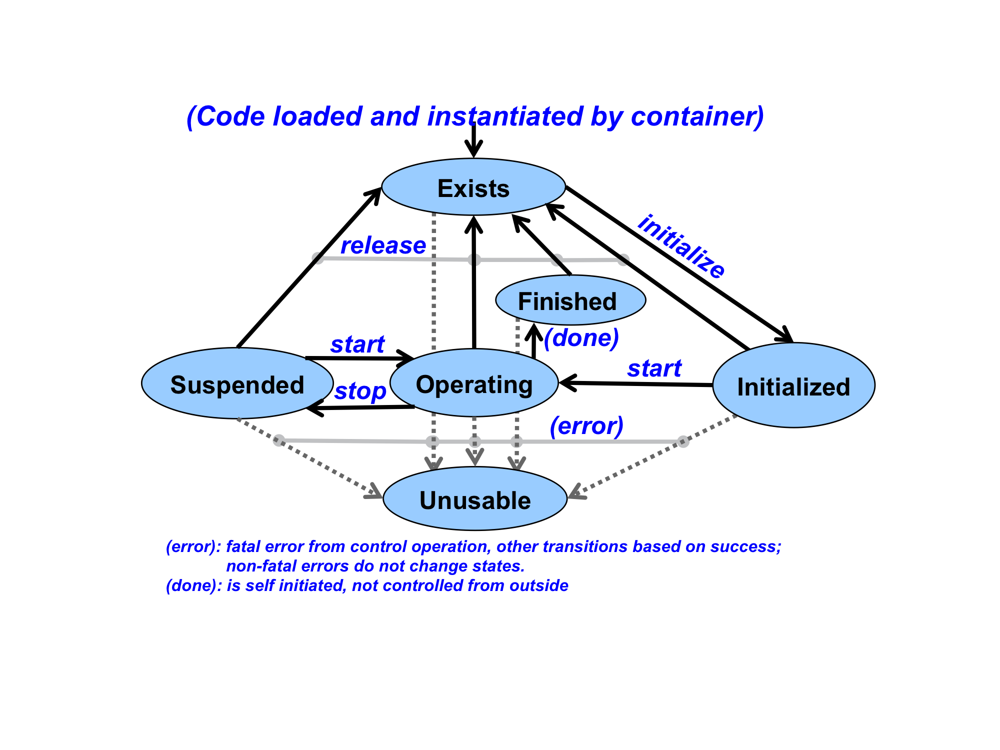
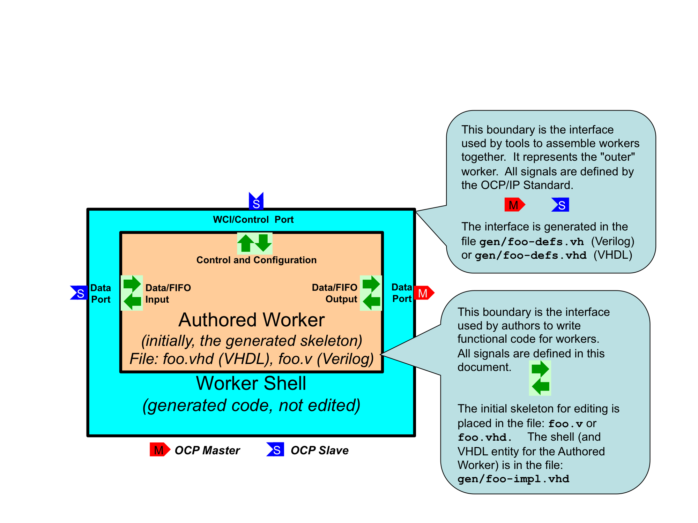
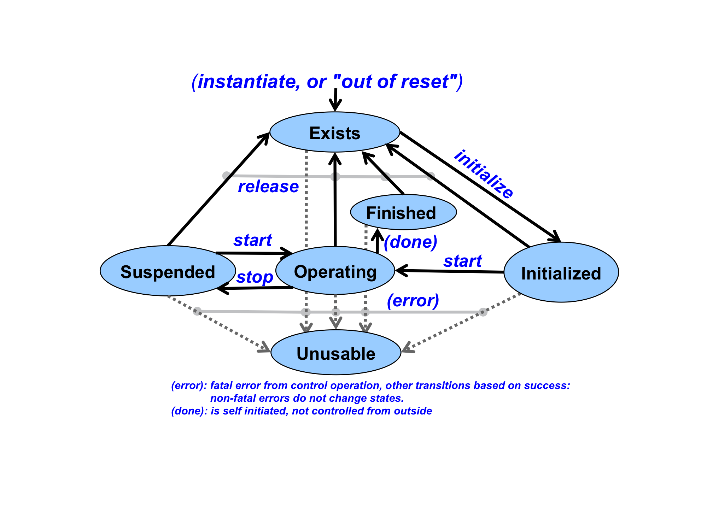
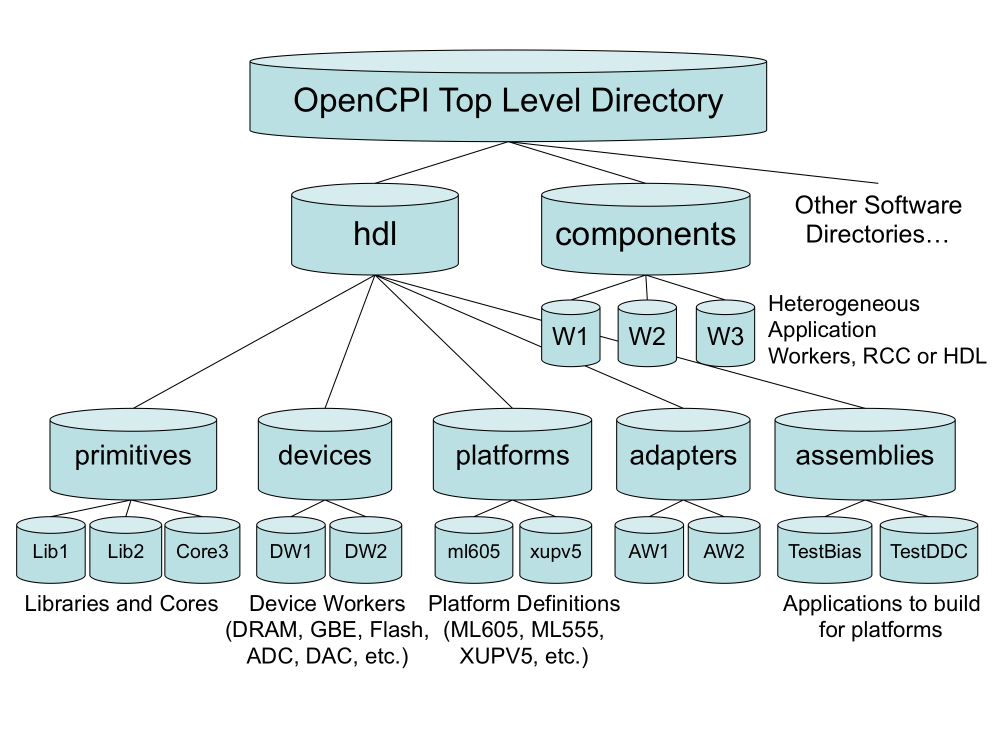

OpenCPI
Component Development Guide
DRAFT
Authors:
Michael Pepe, Mercury Federal Systems, Inc. (mpepe@mercfed.com)
Jim Kulp, Parera Information Services, Inc. (jkulp@parera.com)
Revision History
|
Revision |
Description of Change |
Date |
|
1.01 |
Creation |
2010-06-21 |
|
1.02 |
Add ocpisca information and HDL application information |
2010-08-05 |
|
1.03 |
Add more detail to HDL building, and general editorial improvements |
2011-03-28 |
|
1.1 |
Editing, platform and device aspects of ocpigen, HDL details |
2011-08-01 |
|
1.2 |
Update for latest HDL details |
2013-03-12 |
|
1.3 |
Rename document, add VHDL coding details and ocpihdl utility |
2013-06-15 |
|
1.4 |
Add new and complete assembly and container info, and add two new ocpihdl functions |
2013-11-06 |
|
1.5 |
HDL coding practices, more HDL platform information |
2013-12-10 |
|
1.6 |
Convert to ODT format, add more clarity for parameter properties and readonly properties |
2014-03-31 |
|
1.7 |
Use standard template., minor updates, add generic OWD content. |
2015-02-27 |
|
1.8 |
Incorporate the authoring model reference content into this document |
2015-10-31 |
Table of Contents
2 Overview
3.1 ComponentSpec top level element
3.2 Properties element of ComponentSpec elements
3.3 Property element of ComponentSpec or Properties elements
3.4 Port element of ComponentSpec elements
3.5 Protocol element of Port elements
4.1 Requirements for all authoring models
4.2 Control Plane Introduction
5.1 XML Attributes of the top-level XYZWorker element.
5.2 Property and SpecProperty subelements in the OWD
5.3 Built-in parameters of all workers
5.4 Port Elements of XYZWorker elements
5.6 Parameter Properties in Worker Makefiles
6.2 The Component Library Makefile
6.3 Library Exports
7.2 The Component Specification File: OCS
8.1 Developing HDL application workers
8.4 HDL Primitive and Assembly build scripts (and Makefiles)
8.6 Building HDL assemblies into bitstreams/executables
8.8 The ocpihdl command-line utility for HDL development
8.9 HDL Platform and local Device development
8.10 ocpigen: the OpenCPI tool for code and metadata generation
This document depends on several others. Primarily, it depends on the “OpenCPI Generic Authoring Model Reference Manual”, which describes concepts and definitions common to all OpenCPI authoring models. This document also refers to concepts and definitions in the HDL and RCC authoring model reference documents.
|
Title |
Published By |
Link |
|
OpenCPI Technical Summary |
Public URL: http://www.opencpi.org/doc/ts.pdf |
|
|
OpenCPI RCC Authoring Model Reference |
Public URL: http://www.opencpi.org/doc/rccamr.pdf |
|
|
OpenCPI HDL Authoring Model Reference |
Public URL: http://www.opencpi.org/doc/hdlamr.pdf |
Table 1: References to Related Documents
This document describes how to create OpenCPI component implementations (a.k.a. workers) in a component library, so that they are available for OpenCPI application developers and users. It introduces a kit of tools to specify and develop OpenCPI workers in any supported authoring model. It also describes how to create, build, and manage libraries of heterogeneous components (components that each may have multiple implementations/workers).
For HDL workers and applications, it also describes how to create libraries of primitives (smaller/simpler reusable modules) used to build HDL workers, and how to assemble a group of HDL workers to form an “HDL assembly”, in order to build a complete FPGA bitstream that will support part or all of an OpenCPI component-based application.
We refer to the set of tools, scripts and libraries used for developing components and workers as the: OpenCPI Component Developer’s Kit (CDK). The CDK is not an IDE (although integration with some IDEs is under development) but rather is a set of commands, “make” level tools, and scripts that support the development process. The CDK relies on several conventional tools, including GNU “make”, and other basic POSIX command-line tools.
The CDK also includes several tools specific to OpenCPI that support heterogeneous code generation.and component testing. These tools are usually used indirectly, by using the built-in provided “make” scripts that facilitate building component libraries of workers (heterogeneous implementations), and building workers in each of the available authoring models.
The OpenCPI CDK also relies on technology-specific compilers (e.g. gcc) and (FPGA) synthesis and simulation tools (e.g. Xilinx XST and Isim, Altera Quartus, Modelsim etc.). These tools are a mix of open-source/free and commercially available.
Several key concepts are described in the following sections, followed by the development process for creating component libraries to support the execution of component-based applications.
Component Specification: an XML file that describes a component in such a way that it may be implemented using different languages and APIs for different processing technologies and environments.
Authoring Model: one of several different ways of creating component implementations in specific languages using specific APIs between the component and its execution environment.
Worker: a specific implementation of a component specification, with the source code written according to an authoring model.
Component Library: a collection of component specifications and workers that can be built, exported and installed to support applications.
An OpenCPI Component Specification (OCS) describes, in a simple set of one or more XML text files, the aspects of a component that are the same regardless of the authoring model used by any implementation of that component. Thus a requirement for developing an implementation of an OpenCPI component (a worker) is that there must exist an OpenCPI Component Specification (OCS) common to all implementations of that component.
The OCS essentially describes two things: (1) the configuration properties of the component (how it is initially and dynamically configured and controlled), and (2) the (data) ports of the component (how it talks to other components). Based on these two aspects, all components can be configured and interconnected in an application, regardless of component implementations. An OCS does not contain a description of exactly what happens inside the component (a behavioral description), but only how it is used in an application.
Thus the first step in having actual component implementations built and usable for component-based applications is to have an OCS on which to base the implementation(s). OpenCPI uses the term “worker” as shorthand for “component implementation”. Thus an OpenCPI worker is an implementation based on an OCS and a particular authoring model. The worker consists of two things:
A separate (from OCS) XML description called the OpenCPI Worker Description (OWD) of the particular implementation, indicating the authoring model and which OCS the implementation is based on
The source code in some programming language that does the actual computing function of the implementation, written according to the authoring model.
The component specification is a top-level XML element that is usually in a file by itself, since it will be reused and thus referred to by multiple workers.
A component specification is the XML element describing a component at a high level without implementation choices or details. It describes enough about how the component can be integrated into an application to ensure interoperability and interchangeability among different implementations. Multiple such implementations are possible given the component specification.
The component specification XML element contains component-global attributes, configuration aspects and data port aspects. A component specification is contained in the XML element whose type is “ComponentSpec”, which should be a top-level element in a file, structured as:
<ComponentSpec
---attributes---
>
---child elements---
</ComponentSpec>
Below are the attributes and elements of the ComponentSpec top-level XML element.
The “Name” attribute of the component specification is constrained to be acceptable as an identifier in several contexts, including various case sensitive programming languages. It identifies the component specification as a whole. It is case insensitive: within a library or application, two different component specifications cannot differ only in case. When the ComponentSpec element is the top level element of a file, the component name attribute is defaulted from the name of the file before any suffixes. Thus this attribute is optional when the ComponentSpec is the top level element of a file. Using this default is recommended since this eliminates any confusing mismatches between the name of the OCS file and the name of the component.
The “NoControl” attribute of the component specification is a boolean attribute that indicates, when true, that components using this specification have no lifecycle/configuration interface at all. This is generally not allowed for application components but is specified for certain infrastructure components.
The Properties element of a component specification enumerates the name, type and behavior of configuration properties by containing Property child elements. The Properties element may be in a separate file and referenced using the <xi:include href=”<file>”/> syntax. This is useful when groups of Property elements are shared among multiple component specifications. However, the most common usage is for Property elements to be directly enumerated under the top level ComponentSpec element, without using the Properties element at all.
The Properties element has no attributes, but consists of a list of Property child elements. Anywhere in the list of Property elements in the overall Properties element, you can include additional Properties elements using the <xi:include href=”<file>”/> syntax. This allows a nested list of properties to be shared as a subset of the properties of different components. When a group of properties is used in multiple component specs, it is placed in a separate file with this element at the top level.
A Property element describes one configuration property. It occurs as a sub-element of either the ComponentSpec element or the Properties element. A Property element describes the name, data type and accessibility of a configuration property. Its data type can be a scalar type or a structure. Each property can also be an array or sequence of its data type. Consistent with the CORBA IDL specification, the term “array” refers to a fixed number of data values of the specified type, whereas the term “sequence” refers to a variable number of data values, up to a specified maximum length. All variable length data types used for properties must be bounded. See the “sequences” and “strings” data types below. The attributes of the Property element are listed next.
The Name attribute is the case insensitive name of the property. A set of properties cannot have properties whose names differ only in case. Mixed case property names can be used for readability. When a Properties element includes (via xi:include) other Properties elements there is still only one flat case-insensitive name space of properties for the component.
The Type attribute specifies the data type of the property. The legal types (case insensitive) are: Bool, Char, Double, Float, Short, Long, UChar, ULong, UShort, LongLong, ULongLong, Enum, String, and Struct. The “Char”, “Short”, “Long”, and “LongLong” types represent 8, 16, 32, and 64 signed integer values respectively. The “Float” and “Double” types are consistent with 32 and 64 bit IEEE floating-point types, and the “String” type is a null terminated string. When the “Type” attribute has the “String” value, the “StringLength” attribute must also be supplied, to indicate the maximum length of the string property values, excluding any terminating null character (consistent with CORBA-IDL and ISO-C strlen function). If no Type attribute is present in the Property element, the type “ULong” is used as the default.
When the type is “Enum”, the actual values are zero-based Ulong, but the values are indicated by strings found in the “enums” attribute described below.
The “ArrayLength” attribute is used when the property is a fixed-length one-dimensional array of the indicated type. The “SequenceLength” attribute is used when the property is a variable length sequence of the indicated type.
When the type is “Struct”, the Property element itself has Member sub-elements that indicate the types of the members of the struct property. No struct members can be of type “Struct”. The SequenceLength and ArrayLength attributes may apply to “Struct” properties. Member child elements are similar to Property elements in that they describe the name and data type information for the member.
Thus all types have a maximum length. Properties cannot have unbounded length.
The StringLength attribute is used when the Type attribute is “String”, and indicates the maximum length (excluding any null termination) string value that this property can hold. It is required for string properties.
This attribute is required when the Type attribute is “enum”, and its value is a comma-separated list of strings that name the enumerated values. The actual values are Ulong and are zero-based ordinals based on the position of the names in this list.
The presence of this attribute indicates that the property values are a fixed length one-dimensional array of the type specified in the Type attribute, and that fixed length is indicated in the value of this attribute.
The presence of this attribute indicates that the number of property values is a variable, but bounded, sequence of the type specified in the Type attribute, with the maximum length indicated in the value of this SequenceLength attribute. Thus this property has the specified maximum length, and always contains a current length, up to that limit. When both SequenceLength and ArrayLength attributes are present, the meaning is “sequence of arrays”, not “array of sequences”.
The value of this attribute is a comma-separated list of array dimensions indicating an array whose number of dimensions is the number of values in the list. If this attribute is set, then the ArrayLength attribute should not be set. This attribute implies that values are multidimensional arrays with elements whose type is indicated by the Type attribute.
The name of this attribute is “default”. It is not a “default attribute”. This string-valued attribute provides a default value for the property for all implementations. It is parsed based on the data type specified in the Type attribute. This value is set by the infrastructure at runtime when any implementation is instantiated in the runtime environment, unless an initial property value is specified by the application. The purpose of this attribute is to advertise what value will be used if no initial value is provided by the application. Default values should only be specified for properties whose accessibility is “initial” or “writable” (see below). The format of the string value of this attribute is described in the “XXX” section below.
The attributes described here specify what property accesses are allowed under what conditions. They are all boolean attributes and all have the default value of “false”. It is an error for all of them to be false.
This attribute being true indicates that this property can be read by control software and that the workers will not change it. If set to false (as well as the “volatile” attribute being false), attempts to read the property value at any time after instantiation will result in an error.
This attribute indicates, when true, that the property is readable and that its value may change during execution, without it being written by control software. When neither “readable” nor “volatile” is true, attempts to read the property value will result in an error. Only one of “readable” and “volatile” should be set to “true”.
This attribute indicates whether this property can be written both before and while the worker is in the Operating state. If set to false, attempts to write the property value during operation will result in an error.
This attribute indicates whether this property can be set during initialization. If set to false (and “writable” being false), attempts to specify an initial property value will result in an error. Thus a property that has “Initial” as true, but writable as false, can be set at initialization-time, but not set at run-time. Only one of “writable” and “initial” may be set to “true”.
This attribute is used for properties that exist only for “padding” purposes, and thus are otherwise inaccessible. In some cases where the list of properties is intended to be in a predetermined sequence with specific offsets or gaps between properties, a property that has no access is used, and needs this attribute to be set to “true”. It is rarely used in a component specification, but may be used in a worker description (see below).
This attribute indicates that the property's value is used at compile/build time when source code is processed into a binary artifact to be loaded and executed and run-time. It also allows the default value expressed in this property to be used by name elsewhere in the OCS and OWD XML files.
There are two primary uses for properties designated as parameters using this attribute:
A convenience “variable” for defining other attributes like string and sequence lengths or array dimensions.
A performance/footprint enhancement for compiled constants vs. runtime settable values.
The first “convenience” usage allows properties defined as parameters to be used in expressions for the value of “stringlength”, “sequencelength”, or “arraylength” and “arraydimensions” attributes. For the allowable syntax of such expressions see the “attribute expressions” section below. An example is when you would like multiple properties to have the same array dimensions, or to have array dimensions that relate to each other (e.g. one twice as long as the other). An example is:
<property name='nbranches' default='14'/>
<property name='tree1' arraylength='nbranches'/>
<property name='tree2' arraylength='nbranches*2 – 1'/>
The second usage is to allow a component specification to indicate a propertty as “initial” (settable only before execution), and allow some implementations to actually compile in the value for efficiency purposes. The component spec just says “initial”, allowing implementations to either:
Have the property be configurable to any value at execution time-difference
--or--
Have the property be fixed and compiled in to the implementation.
This allows some implementations (workers) to be flexible and allow different values at runtime, while other implementations can fix the value at compile time. When the application specifies a particular value, the worker with the compiled-in value can only be used if the requested value matches the compiled-in value, whereas the worker with the non-parameter property can be used with any value. This second usage of the “parameter” attribute is discussed further in the section on the worker XML (OWD) files below.
In either cases, these parameter values are also made available for worker source code during the build process.
For attributes that take numeric values (such as StringLength, ArrayLength, SequenceLength, and ArrayDimensions), the values can be non-negative numeric values, but also be expressions using properties defined as parameters as variables in the expression. The expression syntax is typical C syntax and operator precedence, with the following additions:
Any identifiers are expected to be parameter properties with default values.
Numeric constants can be in any radix according to the C syntax (e.g. 0x123)
All arithmetic is done using 64 bits.
Numeric constants can use the single-letter suffixes: K for kilo (2^10), M for mega A(2^20), G for giga (2^30).
All C language operators are available including the (a?b:c) ternary operator. The comma operator is not available. Thus if the “nbranches” property was a parameter, a valid expression might be:
nbranches == 0x123 ? 2k-1 : O177
The component specification defines ports through the use of this “Port” element. It specifies the direction/role of the port (producer or consumer) and the message protocol used at that port. For compatibility, “DataInterfaceSpec” can also be used in place of “Port”.
The Port element has several attributes and one optional child element: the Protocol.
This attribute specifies the name of this port of the component. The value of the name attribute is a string that is constrained to be valid in various programming languages. It must be unique (case insensitive) within the component specification.
This boolean attribute indicates whether this port has the role of a producer (when “true”), vs. the default (false) of consumer.
Not be confused with the Protocol element below, this string attribute names an XML file containing the protocol description for this port. The named file is expected to contain a Protocol element at its top level. If the port being described is permissive, meaning it can accept any protocol, then this attribute (and the element) can be absent. An example of this is a “file writing” component that accepts any types of messages as input, regardless of protocol.
This is the attribute whose name is “optional”. It is also an “optional attribute”. This boolean attribute indicates whether this data port may be left unconnected in an application. The default (false) indicates that workers implementing this component require that this port have a connection to some other worker in the application. When true, this port may be left unconnected and all workers implementing this specification must support the case when the port is not connected to anything.
The protocol element, which is a child element of the port element, specifies the message protocol used at this port. The Protocol is a separate element since it will likely be reused across a variety of components and interfaces and thus may be the top level element in a file referred to via the “xi:include” mechanism mentioned above or more simply using the “protocol” attribute described above. The protocol (element) has “Operation” subelements to indicate the different message types that may flow over this data port.
If the port being described is permissive, meaning it can accept any protocol, then this element (and attribute) can be absent. An example of this is a “file writing” component that accepts any types of messages as input, regardless of protocol.
When the protocol element is the top level element in a file, the (optional) name attribute is defaulted from the name of the file, with any “-prot”, “_prot”, “-protocol”, “_protocol”, “.xml” suffix removed. Since protocols are usually defined in separate files, the names are usually not present in the XML and thus defaulted from the file name.
The term “Operation” is loosely associated with the analogous concept in RPC systems where the message is “invoking an operation on a remote object”, but in this context it simply describes one of the messages that is legal to send on a port with this protocol. It has two attributes and some number of “Argument” child elements, which describe data fields in the message.
This attribute is a case insensitive name of the operation/message within this protocol.
This child element indicates a data field in the message payload for the given “operation” (message type). Its attributes are the same as those of the “Property” element that describes a configuration property (Name, Type, StringLength, ArrayLength, SequenceLength, etc.). If no argument elements are present under an Operation element, it means that the operation defines messages with no data fields (sometimes called Zero Length Messages). Similar to “member” elements in property elements whose “type” attribute is “struct”, but arguments to an operation do not have to have bounded lengths, so the StringLength attribute is not required for strings, and the SequenceLength attribute is not required for sequences.
Here is an example of a component specification. The in-line use of the Protocol element is silly since it would normally be in a separate sharable file.
<ComponentSpec Name="K1spec"
<Property Name=”size” Type=”float”/>
<Port Name="lvds_tx" Producer="true">
<Protocol>
<Operation Name=”mess1”>
<Argument Name=”val” Type=”uShort” ArrayLength=”1024”>
</Operation>
</Protocol>
</Port>
</ComponentSpec>
The XML description of the worker is called the OpenCPI Worker Description (OWD). Thus to built a worker (to have an implementation) you start with an OCS (common to a group of implementations), write an OWD, and then write the programming language source code.
An OWD is a general concept, since actual OWDs have a format specific to an authoring model. Each authoring model defines a specific XML format for describing the worker written for that model, with the requirement that each OWD refer to the OCS that is common to all workers implementing the same component. The many common aspects of all OWDs are described in the OWD section below.
This section introduces the concept of an OpenCPI authoring model, and defines aspects common to all authoring models. It specifies the concepts, lifecycle states and related operations, and XML metadata used and manipulated by OpenCPI tools and OpenCPI component developers.
We use the term “component” to encompass the functionality and abstract interface aspects. We use the term “worker” to mean a particular implementation of a component written (or “authored”) using some programming language source code.
We define an authoring model casually as “a way to write a worker”. A key goal is to support different processing technologies such as General Purpose Processors (GPPs), Field-Programmable Gate Arrays (FPGAs), Digital Signal Processors (DSPs), or Graphics Processors (GPUs).
Since there is no one language or API that allows all these processing technologies to be utilized with efficiency and utilization comparable to their “native” languages and tool environments, we define a set of “authoring models” that achieve native efficiency with sufficient commonality with other models to be able to:
Implement an OpenCPI worker for a class of processors in a language that is efficient and natural to users of such a processor
Be able to switch (replace) the authoring model and processing technology used for a particular component in a component-based OpenCPI application without affecting the other components of the application.
Combine workers (component implementations) into an application using a multiplicity of authoring models and processing technologies.
An OpenCPI Authoring model consists of these specifications:
An XML document structure/schema/definition to describe the aspects of the implementation that are specific to the authoring model being used and needed by tools and runtime infrastructure software.
Three sets of programming language interfaces used for interactions between the worker itself and its environment:
Control and configuration interfaces for run-time lifecycle control and configuration, sometimes referred to as “the control plane”.
Data passing interfaces used for workers to consumer/produce data from/to other workers in the application (of whatever model on whatever processor), sometimes referred to as “the data plane”.
Local service interfaces used by the worker to obtain various services locally available on the processor on which the worker is running.
Each authoring model also specifies how a worker is built (compiled, synthesized, linked) and packaged, to be ready for execution in an application.
Enable/support well-defined data plane interoperability with other authoring models
Define its OpenCPI Worker Description (OWD) XML format.
Define programming language interfaces for control, data, and local services.
Must define the packaging for delivering ready-to-execute workers.
The material in this introduction is common to all authoring models, and is included in all authoring model documents for convenience. We use the term “Control Plane” to encompass the various aspects of how control software, usually running in a centralized processing environment, can control worker instances at runtime. The entity that is doing the controlling (or managing) is the “control agent” or “control application”, or simply “control software”. The control software sees all controllable worker instances the same, regardless of where they are running, on what type of processing technology, and with what authoring model they were written.
While control software sees a uniform view of how to control workers, each authoring model defines how this is accomplished from the point of view of the worker itself. In particular, each authoring model defines how the two key aspects of control are made visible to the worker's source code: LifeCycle control and Configuration Property access. Later sections of each authoring model specification give additional interface details of these interactions, but they all follow a common pattern which is defined here.
Most component-based systems have an explicit lifecycle model, where workers are instantiated and then are centrally managed, according to a lifecycle state machine. Normally all components in the application are managed together and they all progress through the lifecycle together. However, there are cases where control software must control (start/stop etc.) some components in the application different than others.
The LifeCycle model is defined by the “control states” each worker may be in, and “control operations” which generally change the state a worker is in (effecting a state transition). These are shown in the following diagram.

Diagram 1: Control States and Operations
Control operations have default implementations (that perform the state transitions and nothing else): workers only need implement the ones that have custom behavior. A good example is the “initialize” control operation. If the worker has no runtime initialization to perform, it can avoid any implementation (or even empty “stub”). Each authoring model describes which control operations must have implementations, but generally they are optional.
Control operations may have either transient or fatal errors. Transient errors imply that no state change occurred, and the operation can be retried. Fatal errors imply that the worker instance (member) has become unusable and probably needs to be reloaded.
Control software is required to issue control operations correctly, in sequence, so workers can avoid checking for valid states and transitions. State descriptions are below:
|
Control |
Previous State(s) |
Allowable |
Description |
|
Exists |
Initial state or all (except unusable), after release |
Initialize |
After instantiation or successful release. |
|
Initialized |
Exists |
Start, Release |
Initialization complete. In a stable state “ready to start doing work”, not “operational”. Properties can be read and written. |
|
Operating |
Initialized, Suspended |
Stop, (done), Release |
Member doing normal work using properties and data at ports. Properties can be read or written. |
|
Suspended |
Operating |
(Re)start, release |
Member not operating, will not produce or consumer at data ports. Properties can be read or written. Can be resumed via start. |
|
Finished |
Operating |
Release |
Member is finished and will not produce or consumer at data interfaces. Properties can be read or written. Entered autonomously. |
|
Unusable |
All (fatal errors) |
none |
Fatal error state, may not be ever reusable without reloading (container-dependent). |
Table 2: Control States
Configuration Properties are worker-defined writeable and/or readable values that enable worker-specific control and monitoring of workers by control software. They are logically the “knobs and meters” of the worker's “control panel”. All authoring models provide the interface enabling the worker to access (read and write the values) these values.
Some authoring models define a flat/linear “configuration address space” where the configuration properties are accessed by accessing this memory space, roughly as a data structure or “register file”.
The component specification for the worker, as a description that applies to all the implementations of that specification, contains the description of configuration properties considered part of the “component’s external behavior”: that must exist in all implementations (all workers meeting that spec). However, each worker may also add to this set of configuration properties and define implementation-specific configuration properties. These are sometimes useful for debugging or when the initial configuration specified for the whole application might list some of these properties to properly configure a particular implementation.
Each configuration property is defined with a name and data type from a limited set of data types that are sensible across many authoring models and processing technologies. Although each configuration property may also be variable in length (e.g. a string, or a variable length sequence of numbers), there is always a defined maximum length for any such property value. This enables components and workers to be compliant with a variety of component system standards, and enables authoring models for lean and embedded technologies.
The available data types are scalar types, structures, multidimensional arrays of those types, and single dimension variable length sequences of the same types. The scalar data types are: Bool, Char, Double, Float, Short, Long, UChar, ULong, UShort, LongLong, ULongLong, Enum, and String. The “Char”, “Short”, “Long”, and “LongLong” types and their unsigned counterparts are 8, 16, 32, and 64 bit signed and unsigned integer values respectively. The “Float” and “Double” types are consistent with 32 and 64 bit IEEE floating-point types, and the “String” type is a null terminated string with a defined maximum length. Sequences also have a defined maximum length. “Enum” types are represented by ULong values, but are associated with defined string names.
Beyond data type, the configuration properties also have attributes that define whether the value can only be set at initialization time (an “initial” property) , set any time during execution (a “writable” property), or never set (read-only). Similarly, a configuration property value can be described as “volatile” (the value may be changed by the worker during execution) or static (“readable”) and will not change unless written by control software.. This covers many patterns of use and optimizations for such values, and results in 9 valid combinations of readability and writability.
As mentioned earlier, a worker (in the OWD XML) may have additional properties beyond what is specified in the OCS XML: commonly extra status information for debugging. Furthermore, an OWD may add to the accessibility of a property specified in the OCS, e.g. make a property readable that was not readable in the OCS, for debug purposes (e.g. to read back what was written). The accessibility added by the OWD results in the implementation having a superset of what was “promised” in the OCS.
While the OCS specifies properties and their initialization-time and run-time accessibility, an implementation OWD can further declare that a property is actually a compile time parameter of the implementation. This is not allowed (and does not make sense) for properties that are “writable” at runtime. When an implementation has properties that are parameters, it means that the implementation must be built (compiled, synthesized, elaborated) for specific values of such properties. This has three implications:
An application can only use the worker if it is built for a property value that matches what is requested as an “initial” property in the application.
Binary component libraries may have multiple builds (binary artifacts) for the same worker, but with different combinations of parameter values.
The component developer must decide which combinations of parameter values to build, in order to make alternative settings of such parameters available.
This parameter feature allows implementations to have compile time optimizations for certain parameter values, and also allows a single worker source code module to be optimized for different values.
Parameter property values are applied to the build process as expected for the language of the authoring model: e.g. by “preprocessor symbol definitions” for C, static const values for C++, “generics” for VHDL, and “parameters” for Verilog. A very common (and in fact built-in) parameter property is the “debug” boolean property that specifies the typical “debug build” vs. “production build”.
Each authoring model specifies how properties (runtime and compile time) appear to the worker code, and how the worker may read property values written by control software, and write values that will be read by control software. Furthermore, different authoring models define how workers know when control software is actually reading or writing these values.
The material in this section applies to most software-based authoring models, although it does not apply to the HDL/FPGA authoring model.
Containers for software-based workers execute them such that all execution threads are supplied by the container. Thus there is no need or possibility for workers to create threads. This approach reduces complexity of component code, eliminates any requirement to support a threaded API capability, and allows the container to determine the level of multithreading that is needed. Different authoring models supply such threads in different ways, which is detailed in the individual sections for each.
Execution of a worker is enabled when the worker is in the “operating” control state (as defined on the Control State section above), but workers are only executed when either some combination of its ports are “ready” (i.e. have buffers), or time has passed. This combination of “port readiness” and the passage of time is called the workers run condition: the condition under which it should be run.
Every worker has an entry point called its run method. When a worker's run condition is satisfied (as determined by its container), its run method is entered. Worker execution is thus a series of “runs” initiated by the container. The run method cannot block, but returns after doing some work, allowing the container itself to determine when the worker should be entered again: when its run condition is once again satisfied.
The container calls the worker's run method when the worker’s run condition is satisfied. Run conditions are satisfied based on the availability of its input buffers (with data) or output buffers (with space) at a workers ports or the passage of time (detailed below). The worker’s run method executes some processing tasks and may:
process some available messages at some of its input ports
produce messages at some of its output ports
indicate when messages are consumed as input or produced as output
make any changes to its run condition
It then returns control to its container. Workers never block. The container conveys the messages in buffers between collocated workers as well as into and out of the container as required by the application assembly’s connections.
Thus the container determines when the worker should run, and supplies it with buffers full of input messages, or buffers into which output messages may be placed.
Workers declare a “run condition” which is a data object that tells the container under what conditions the worker should run. The container evaluates the run conditions of all workers and runs them as resources and priorities allow.
The run condition object contains two aspects: port readiness and time. Thus the worker is run when its port readiness requirements are satisfies –or– a specified amount of time has passed. Either or both aspects can be specified.
While the worker is not running (and thus the container is considering whether to run it), port readiness simply means that buffers are available at that port to be used by the worker. Input ports have available buffers when there is message data present that has not yet been consumed by the worker. Output ports are ready when buffers are available into which they may place new data. I.e. input ports are ready when the worker has data to consume, and output ports are ready when the worker has room to produce new data into a buffer. Workers may partially consume or partially produce messages in any given run.
This “port readiness” model implements simple data driven execution: code is run when data can flow. The default run condition specifies that the worker should run if data is available at all input ports and space is available at all output ports (or conversely, there are no ports that are not ready). Note that this default, for workers with no ports, means they are always ready to run.
The time aspect of run conditions (when indicated by the worker) specifies the desired maximum time between invocations of the worker’s run method. If no “port readiness” is also specified, this simply indicates periodic execution. If the time aspect is specified with port readiness, it indicates that execution should take place when either the indicated port readiness conditions are satisfied –or– the indicated amount of time has passed since the worker's run method was last entered.
The default time aspect of run conditions is: no such maximum time at all. In this case time passing does not affect worker execution, only port readiness.
A worker may change its run condition at any time during the execution of its run method by passing a new run condition to the container, to be considered after the run method returns to the container.
In summary, run conditions specify a combination of data-driven and time-driven execution. Most workers use one or the other aspect, but some need both. The defaults allow most workers to never bother indicating any run condition at all.
The worker indicates data flow by telling the container when it has consumed the message in an input buffer at a port (and thus that buffer can be released and reused) and when it has finished placing a message in an output buffer at a port (and thus the message in that buffer can be sent to where it will be consumed).
The worker indicates that an input buffer has been processed and/or an output buffer has been filled during its execution (in its run method) or as a return value from the run method.. It must return from the run method in order to wait for more buffers to process. The worker never blocks.
The container provides and manages all buffers and provides references to buffers to the worker. Thus input ports operate by the container providing buffers to the worker filled with incoming messages, and the output ports operate by the container providing buffers for the worker to fill with messages before being sent. Output buffers (sent at output ports) are either:
obtained for a specific output port (since they may be in a special memory or pool specific to a particular output hardware path), or
originally obtained from an input port and passed to output ports, with no copying by worker code.
Workers may modify data in input buffers, which allows input buffers to be used for temporary storage (reducing overall memory requirements). If they do this, they must say so in the worker description XML so that the container ensures that such a buffer is not shared with another consumer of the same data.
Several more advanced buffer management requirements are supported for certain situations as needed:
To support sliding window algorithms, workers are allowed to retain ownership of previous buffers (not releasing them), while new ones are requested; i.e. allow explicit (in order) input buffer release, not implicitly just the most recent buffer obtained. The worker must still release the buffers in the order received.
To support zero copy from input ports to output ports, workers are allowed to send a buffer obtained from an input port to an output port, and not require an empty current buffer to fill on the output port. Such buffers must be sent (or released) in the order received. This avoids copying data from input buffers to output buffers.
The above features are only needed in certain cases, and can be ignored entirely for most simple workers. To support these more advanced modes, non-blocking interfaces for explicitly releasing, sending, and requesting buffers are available.
Logically, there are four operations performed with message buffers, which is the basis for specific APIs defined in each authoring model. They are all non-blocking functions:
Request that a new buffer be made available. For an input port, it will be filled by the container with a new input message. For an output port, it is to be filled by the worker with a new output message. In both cases the ownership of the buffer passes from container to worker when it becomes available. The new buffer may or may not be immediately available based on this request.
Release a buffer to be reused, with its contents discarded. The ownership passes from worker to container. Input buffers must be released (or sent) in the order received, i.e. ownership of input buffers must be passed from worker to container in the order that ownership was given from container to worker.
Send (enqueue) a buffer on an output port, to be automatically released (later) after the data is sent. The ownership passes from worker to container. If the buffer was originally obtained from an input port, it must be sent or released in the order received.
Take the current buffer from an input port such that is it no longer the current buffer of the port, but ownership is retained by the worker. This allows new input buffers to be made available while the worker holds on to previous buffers. A take implies a request for new buffers. This function allows workers to use previous buffers to hold history data for algorithms such as sliding window or moving average, without allocating any additional storage.
The concept of the current buffer of a port supports a convenient model for workers that have no need to be aware of buffer management. A port is ready if it has a current buffer. A current buffer on an input port is available to read data from. A current buffer on an output port is available to write data into. The concept of advancing a port, is simply a combination of releasing (input) or sending (output) the current buffer of the port, and requesting a new buffer to be made available on that port, to become the current buffer when it becomes available in the future:
advance = release_or_send + request
Simple workers, using the default run condition, wait for all ports to be ready (to have buffers), process input buffers into output buffers, advance input and output ports, and return.
Worker APIs defined by the authoring model are designed to make this common pattern as simple as possible. Workers are run when ports to be ready, and they advance ports after processing messages in current buffers.
In each worker directory there is an XML file that describes the worker and references the spec file in the component library “specs” sub-directory. These files are called OpenCPI Worker Descriptions or OWDs. The generic (common across authoring models) aspects of these implementation description files (OWDs) are described in this section, while the OWD aspects specific to different authoring models are described in the respective sections for each authoring model. Some authoring models allow multiple workers to be implemented in one worker directory (and in one source code file), in which case multiple OWDs may be in a single worker directory.
The worker description file essentially adds non-default implementation information to the basic information found in the spec file. Each authoring model defines what this worker-specific information might be (for example, the width of an FPGA data path for a port). All OWDs have as the top-level XML element an XYZWorker element, where “XYZ” is the authoring model of the worker.
If the worker in fact has no non-default behavior, there is no need for an OWD: a default one will be generated. This default OWD simply contains a reference to the spec file and specifies the authoring model. E.g., if an RCC worker based on the spec file “search-spec.xml” had no non-default implementation attributes, the OWD file would be, entirely:
<RCCWorker spec='search-spec'/>
Immediately following are the OWD content elements and attributes common to all authoring models, with the word “XYZ” used to represent the particular authoring model being used.
The OpenCPI Worker Description (OWD) is not completely specified here, since it is customized for each authoring model. Actual OWDs are defined for each authoring model, and the top-level element is named according to the authoring model. For example, the RCC authoring model defines an OWD where the top-level element in the OWD XML file is “RCCWorker”. This section describes aspects common to the OWDs for all authoring models. (For XML fans, it is roughly an inherited schema).
The top level element must refer to an OCS by either:
containing a ComponentSpec child element (not shared with any other OWD)
indicating an OCS file by using the “spec” attribute.
For example, if the “fastcore” implementation of the “corespec1” specification using the HDL authoring model referenced the component specification found in the “corespec1.xml” file, the OWD would like like:
<HdlWorker Name=”fastcore” Spec='corespec1.xml'
---other attributes---
>
---other child elements---
</HdlWorker>
The “Name” attribute defaults to the name of the OWD XML file itself (without directory or extension) and is normally omitted. The “Name” attribute of the component implementation is constrained to be acceptable as an identifier in several contexts, including case sensitive programming languages. It is sometimes called the “worker name” or “implementation name”.
While worker names may include both upper and lower case for stylistic or programming language purposes, workers are identified by OpenCPI in a case insensitive manner. This means there should not be two workers using the same authoring model in the same package namespace whose names differ, only in case.
The name of the implementation may be the same as the name of the OCS (the “spec name”). It is typically not required to have a unique name for the OWD unless there are multiple implementations of one OCS that use the same authoring model. I.e. OWD names are implicitly scoped by authoring model.
This string attribute specifies the name of the file for the OCS for this worker. The build scripts and makefiles automatically put the “specs” subdirectory (in the component library's top-level directory) into the search path when these worker description files are processed, so the spec files (OCSs) need only be referenced by their name and not any directory or pathname. If the spec file is actually outside the component library, it can be a relative or absolute pathname. The “.xml” suffix is assumed, thus it is not needed.
This string attribute specifies the source code language used in this worker. The valid languages depends on the authoring model, and for each model there is a default language. Some authoring models have only one valid language in which case this attribute is not required.
This attribute contains a comma-separated list of strings identifying the implemented control operations. For operations that are mandatory for the authoring model, they are assumed. Thus the default implies a minimal implementation that only implements those operations required by the authoring model. The control operations are listed in the LifeCycle Control section of the AMR. Control operations that are required by the authoring model do not need to be mentioned. When only mandatory operations are implemented, this attribute need not be specified.
This attribute specifies the endian behavior of the worker code. When workers are built, the build process may be run in three different modes to create three different types of binaries:
Little endian
Big endian
Dynamic endian based on an input supplied at runtime
The third way (dynamic) is generally not relevant for software since compilers only generate code for a specific assumed endianness. But it is relevant to the FPGA build process to support FPGA bitstream configurations that can operate in both modes. This OWD attribute specifies how the worker's code will work when subjected to these three build scenarios (as specified by the “ocpi_endian” parameter which is present for all workers of all types).
The endian attribute values are described in the following table:
|
Endian |
Description |
|
Neutral |
The worker code is unaffected by endian parameter settings and is correct regardless of the setting. This is the default value, and is generally correct for software workers. |
|
Little |
The worker code is unaffected by endian parameter settings and is will only operate correctly in a little endian mode. |
|
Big |
The worker code is unaffected by endian parameter settings and will only operate correctly in a little endian mode. |
|
Static |
The worker code will respect the endian parameter when set to “little” or “big” and the resulting binaries will operate correctly according to the compile-time parameter setting. |
|
Dynamic |
The worker code will respect all three values of the endian parameter. If the parameter is “little” or “big”, the resulting binaries will work in the requested mode. If the parameter is “dynamic”, the resulting binaries will work in an endian mode specified by an input signal or variable as specified in the authoring model. Not all authoring models may have such an option. |
Table 3 – Worker Endian Attribute Settings
Properties listed in the component spec indicate the external configuration interface for all implementations of the same spec. From the external/application point of view, the “writable” aspect is either not writable at all, settable at initialization, or settable during execution (after start). The “readable” aspect is either not readable at all, readable for a static/unchanging value, or readable for a “volatile” value that can change during execution. This actually results in 9 valid combinations of readability and writability.
A worker may have additional properties beyond what is specified in the component spec: commonly extra status information for debugging. Furthermore, workers may add to the accessibility of an existing property defined in the component spec. E.g. it might make a property readable that was not readable in the component spec, for debug purposes (e.g. to read back what was written). The accessibility added here results in the implementation having a superset of what was “promised” in the component spec.
Whereas a component spec can only contain “Property” sub elements, a worker description can contain both Property and SpecProperty elements. The “Property” elements introduce new worker-specific properties unrelated to those defined in the component spec. The “SpecProperty” elements add worker-specific attributes to the properties already defined in the component spec.
Worker-specific property attributes can occur either in the Property or SpecProperty elements here. Property elements here support all the attributes for Property elements in the component spec (described above) as well as any implementation-specific attributes. For attributes that apply to the Property elements here, any specific constraints for worker descriptions vs. component specs are noted below.
Whereas an OCS can only contain “Property” elements, an OWD can contain both Property and SpecProperty elements. The “Property” elements introduce new implementation-specific properties unrelated to those defined in the OCS. The “SpecProperty” elements add implementation-specific attributes to the properties already defined in the OCS.
Implementation-specific property attributes can occur either in the Property or SpecProperty elements here. Property elements in the OWD support all the attributes for Property elements in the OCS (described in the AMR) as well as any implementation-specific attributes. For attributes that apply to the Property elements, any specific constraints for OWDs vs. OCSs are noted below.
The Name attribute is the case insensitive name of the property. The “Name” attribute is used in SpecProperty elements to indicate which OCS property is being referenced. In the Property elements it indicates the name of the implementation-specific property, which must not be the same as any Property element in the OCS.
These boolean attributes (default false) are used to indicate those properties that require the use of the beforeQuery and afterConfig control operations. I.e., they indicate the need of the worker to know when a group of property settings which includes the indicated property is about to be read (ReadSync) and thus first require a beforeQuery control operation, or that such a group has been written (WriteSync) and thus requires an afterConfig control operation after the group is written. Authoring models that have some native mechanism for reading or writing properties in atomic “batches”, have no need for these attributes or control operations.
These Boolean attributes (default is false) indicate properties that may return errors when the property is read (ReadError) or written (WriteError). If a worker does no such error checking and always succeeds when such property values are read or written, then leaving these values false allows control software to avoid any error checking, which in some models and systems can carry significant overhead. Most workers in most models simply accept new values and thus the default is false.
Some authoring models may always convey the error indications as part of how property values are read or written, in which case these attributes are not necessary.
This string attribute provides a default value for the property for this implementation. If the Default attribute is specified in a SpecProperty element, it is providing a default value for this implementation only. It is not permitted to provide a default value in a SpecProperty when the property in the OCS already has a default value. This attribute's value is applied consistent with the access attributes, specifically:
For an “initial” or “writable” property, the value is set into the implementation at initialization, if no other initial value is specified in the application.
For a “readable” property, the value will be statically available to control software. If it is also writable, the value may be overridden at run-time after initialization.
This boolean attribute, in a SpecProperty element or a Property element, indicates that the property's value is used at compile/build time when the source code is processed into a binary artifact to be loaded and executed and run-time. Parameter properties are supplied to the compilation process for the worker, in a form appropriate for the language and authoring model used. The actual values supplied use the value specified in the “default” attribute (described just above), except when overridden by values specified in the build directory for the worker (as described below). Thus the OWD specifies that the property is a build parameter, and can supply a default value for the parameter.
Parameter properties are utilized for other purposes depending on the access attributes and whether the property is in the OCS or only in the OWD.
When a parameter property is “readable” or “volatile”, the value supplied to the build process is also available as a readable property at runtime, with a constant value.
When a parameter property is “initial”, the binary worker is only considered usable for an application if the value supplied to the build process matches the value specified (required) by the application.
While the component spec defines properties and their initialization-time and run-time accessibility, a worker can further declare that a property is actually a compile time parameter of the implementation. This is not allowed (and does not make sense) for properties that are “writable” at runtime. When a worker has properties that are parameters, it means that the worker must be built (compiled, synthesized, elaborated) for specific values of such properties. This has three implications:
An application can only use the worker if it is built for a property value that matches what is requested as an “initial” property in the application.
Binary component libraries may have multiple builds (binary artifacts) for the same worker, but with different combinations of parameter values.
The worker developer must decide which combinations of parameter values to build, in order to make alternative settings of such parameters available.
This parameter feature allows workers to have compile time optimizations for certain parameter values, and also allow a single worker source code module to be optimized for different values.
Parameter property values are applied to the build process as expected: e.g. by “preprocessor symbol definitions” for software, “generics” for VHDL, and “parameters” for Verilog. A very common (and in fact built-in) parameter property is the “ocpi_debug” boolean property that specifies the typical “debug build” or “production build”.
OpenCPI automatically adds several parameter properties to all workers. The values of these parameters are set during the build process in various ways. Some of these parameters are set to values by the build process and are not intended to be set manually at all. Others may be set or overridden manually in the Makefile.
Each authoring model may also specify additional built-in parameters for all workers using that authoring model. The built-in parameters that apply to all authoring models are described below.
All built-in parameters use the “ocpi_” prefix to avoid collisions with component developers.
This parameter property, of boolean type, indicates whether a “debug build” is being done. The default value is false. Setting this value to “true” indicates to worker source code that any debugging instrumentation or behavior should be enabled, at a potential cost of some resource usage and performance. This built-in parameter is always available, and should be used in worker code to enable things like extra logging or statistics keeping.
Setting this parameter to true will also in some cases, enable some introspection or instrumentation capabilities of code that is in the OpenCPI infrastructure or is generated code used implicitly by the worker.
As mentioned earlier, some properties can be defined with a “debug” attribute value of “true”, which indicates that those properties should only be present when the worker is build with this ocpi_debug parameter set to true.
These debug features allow debug behavior and debug properties to be permanently in the worker's source code and OWD while only being enabled as required.
This parameter property indicates to worker code which endian mode is being used when the worker is being compiled. Its type is an enumeration of three values:
little: The build is intended to generate binaries for little endian systems
big: The build is intended to generate binaries for big endian systems.
both: The build is intended to generate binaries that can be used in either little or big endian mode, selected at initialization time in the runtime environment.
Software authoring models normally set this mode implicitly since compilers generate binary code for a specific endianness based on the processor being targeted (e.g. little for x86 and ARM, big for PPC). Thus software compilation cannot support “both”.
However some authoring models (notably HDL) can support all three compilation modes. The ability of a worker's code to support various endian modes is specified in the worker's “endian” attribute at the top level of its OWD.
[This section is preliminary and not implemented]
There is also a set of target-related parameters that specify which target is being built, called “ocpi_os”, “ocpi_os_version”, “ocpi_arch” for software targets and “ocpi_vendor”, “ocpi_family” for FPGA targets. All these target-related parameters have the type of “string”, and have values that only contain characters that are valid in programming languages: upper and lower case letters, underscore, and numbers.
These built-in parameters allow worker code to be optimized or conditionalized when building the code for certain targets. For example, in the C language one could write:
#if OCPI_ARCH_x86_64()
// code that is for x86_64 architectures
#elif OCPI_ARCH_ARM()
// code that is for ARM architectures
#else
#error unknown architectures
#endif
In VHDL, one might do something like:
l1: if ocpi_vendor_xilinx generate
– code for xilinx
end generate l1;
Ports are how workers communicate with each other. They define message-oriented, “data-plane” communication. Each authoring model defines how workers receive/consume and send/produce messages to or from other workers, whether collocated in the same device or executing elsewhere (possibly in a different type of device, including other workers implemented in other authoring models).
Each authoring model has attributes and elements of this Port element specific to that authoring model, but there are a number of aspects common to all worker descriptions that are described here. A Port element in a worker description matches the Port element in the component spec by name, and adds worker-specific information about how the worker implements the port.
This string attribute must match one of the names of the port elements in the component spec. It indicates for which component port the worker is providing additional implementation-specific information. It is required.
The “make” file (named “Makefile”) in the worker directory can be as simple as one line:
include $(OCPI_CDK_DIR)/worker.mk
This simply tells “make” that this directory is for building a worker whose name and authoring model are derived from the name of the worker's directory, and whose worker description file (OWD) is named the same as the worker name, with “.xml” as the suffix, and whose source file for the actual implementation code for the worker also has the name of the worker with the suffix for the programming language. Such an OWD will be generated if it is not supplied.
Thus, if the name of the directory were “search.rcc”, then the simplest Makefile above would assume that the worker description file is in “search.xml” and the source code to compile for the worker was “search.c” (since that is the default language for the RCC authoring model). Note that if the source file is missing, it will be created automatically as a “skeleton” of the implementation that does nothing, but compiles as a valid worker of the given authoring model. It can then be edited. When “make clean” is run in the worker directory, any generated code skeleton file will be removed if it has not been edited since it was generated.
The worker makefile can also have other “make” variable settings specific to the authoring model, and also may list other source files and libraries needed to compile the worker into the appropriate binary file format (e.g. a shared object “.so” file for RCC workers on linux, or a “.ngc” file for HDL workers using Xilinx XST synthesis tool).
The worker Makefile is commonly left as is, but there are cases where some extra settings need to be present. If your worker will consist of multiple source files, you can add source files (in addition to the skeleton file) by specifying the “SourceFiles” variable in the Makefile. This variable can refer to additional files placed in this directory that are subsidiary to the primary worker source file. The table below lists the variables you can set in this Makefile that are common to all authoring models. Additional variables that only apply to specific authoring models are documented with the authoring model.l.
|
Variable Name |
Override/ |
|
|
SourceFiles |
N |
A list of additional source files for this worker. |
|
Libraries |
Y |
A list of primitive libraries built elsewhere. If a name has no slashes, it is assumed to be in the OpenCPI CDK installation directory. |
|
OnlyTargets |
Y |
A list of the only targets for which this worker should be built |
|
ExcludeTargets |
Y |
A list of targets for which this worker should NOT be built |
|
XmlncludeDirs |
Y |
A list of directories elsewhere for searching for xml files included from the OWD (in addition to the specs directory in the component library) |
|
Worker |
N |
Name of worker; the default is from directory name |
Table 4: Variables in Worker Makefiles
The variables with “Y” in the table above are those than can be specified in the component library’s Makefile to provide a default for all workers in the library.
When a worker has parameter properties, values for these build-time parameters must be specified somehow. When they have default values in the OWD or OCS and no other value is specified for a parameter, that default value is used when the worker is built. Non-default values may be specified in several ways, and this causes the worker to be built for different values of its parameters.
The “target” directories mentioned above are used to separate the files that result from building for different targets (e.g. linux-c6-x86_64 vs linux-arm-zynq, or [xilinx] virtex6 vs [altera] stratix5). Parameter properties add another dimension to the concept of “target”. Thus, when a worker has parameter properties, a different target directory is created for each requested combination of parameter values on each requested target. This more complex concept of “target” results in the definition of “build configurations”, which are combinations of target hardware and parameter values.
If there are no parameter properties, or the worker is built only for the default values of all parameter properties, then no additional target directories are created.
When a worker is built for non-default values of parameters, the target directory name is extended with a build configuration prefix, e;g.:
mycl/search.rcc/target-1-linux-c6-x86_64
The “build-config” prefix is a generated small identifier (generally numeric). To determine the actual build configuration (parameter values) from this identifier, a list of built configurations is placed in the file gen/<worker>-params.xml.
There are two mechanisms to specify parameter values. One is for many simple cases, and is based on Makefile variables. The other is more powerful and is based on a separate XML file to specify any possible build configuration.
To specify the value for a parameter, you set the Make variable whose name is “Param_” followed by the name of the parameter, such as:
Param_xxx=5
To specify multiple values, Makefile variables can be used to specify multiple values for which parameter values a worker should be built. A makefile variable of the form:
ParamValues_<xxx1>=v1/v2/v3
specifies that the parameter whose name is xxx1, should be built for the values v1,v2, and v3. This variable specifies these values independent of the values of any other parameter, and also independent of the “target” variables that specify target hardware. Thus if the variables were specified as:
ParamValues_p1=1/2/3
ParamValues_p2=abc/xyz
then the worker will be built for each target specified for all these combinations:
p1=1, p2=abc
p1=1, p2=xyz
p1=2, p2=abc
p1=2, p2=xyz
p1=3, p2=abc
p1=3, p2=xyz
The “forward slash” character is used to separate the values to allow commas to be used within values when the parameter's data type is an array and/or sequence.
If the worker was built for 2 targets, this would result in the worker being built for 12 different build configurations., which are inferred from the settings of parameter and target make variables. Like all Makefile variables, these parameter variables can be specified on the make command line, and at higher levels of make. Thus to build an entire component library with the “p1” parameter set to 2, you would simply do this in the top level directory of a component library:
make Param_p1=2
The syntax of parameter values is the same as described for default values for properties in the [AMR], with the limitation that string values cannot have spaces, quotes, commas or backslashes. If those are needed, the XML file method of specifying parameter values must be used.
There are a number of limitations when using Makefile variables to specify parameter values:
Different parameters are independent of each other so you get the cross-product of all combinations.
The value syntax is not generally usable for string values with embedded spaces, commas, quotes or backslashes.
As with most Makefile variable uses, misspelling the name of a Makefile variable does not result in any error.
Using the Makefile variables is the simplest way to specify build configurations, but that method can result in a combinatorial explosion of builds when there are several parameters that can take several variables. Also, the Makefile variable method restricts parameter values when they are strings. To overcome these limitations, you can specify all build configurations in an XML file which can indicate specific builds with specific parameter values and specific targets.
The name of this file is “build.xml”, and the top level element is “build”. There are two sub elements that can occur in this top level element:
parameter to specify parameter values for all configurations
configuration to specify a single configuration with its own specific parameter values parameters.
This element specified one or more values for the parameter. The name attribute specifies which parameter, and must match the name of the parameter property in the OWD (case insensitive). The values can be specified one of four ways:
The value attribute can specify the single value.
The values attribute can specify a slash-separated list of values.
The valueFile can specify a value in a file.
One or more “value” child elements can specify values as textual content.
When the parameter element is at the top level of the build.xml file is it specifying values common to all configurations. When multiple values are specified, it indicates that builds should be done on all the values. If the same parameter is mentioned as a subelement of a configuration element, it overrides any top level values for that parameter for that configuration. An example build.xml file is:
<build>
<parameter name='debug' values='true/false'/>
<configuration name='a'>
<parameter name='mode' value='lownoise'/>
<parameter name='taps' valueFile='taps.txt'/>
<parameter name='labels'>
<value>A label with “quotes”</value>
<value>another Label \\\,</value>
</parameter>
</configuration>
</build>
[Note: this file is not yet supported, and in the future this file will entirely supplant the Makefile]
The configuration element has a name attribute which will appear as the build configuration suffix to the name of the target directory for that configuration. The configuration element also has parameter subelelements indicating the specific parameter values for that configuration.
The precise way that parameters and their values appear in source code varies by programming language. In most cases, languages have standard data types for property data types, and constants are defined that specify these values.
C and C++: A “static const” variable is defined which is initialized to the parameter value. The name of the variable is the property name prefixed with “PARAM_”.
VHDL: A generic with the parameter's name is set to the value.
Verilog: A parameter with the parameter's name is set to the value.
The worker source files must be written according to the authoring model, but as a starting point, if no such file exists, you can use “make skeleton” to create an empty skeleton of a worker implementation that will in fact compile, build and execute (doing nothing). The “make new” command described above does this. If additional source files should be compiled and linked to make the binary file in an implementation directory, the “make” variable “SourceFiles” can provide a list of files in addition to the ones named for the workers being built. For example if the file “utils.c” was used in an RCC implementation directory that was building workers w1 and w2 into the same binary file, the makefile would be:
Workers=w1 w2
SourceFiles=util.c
include $(OCPI_CDK_DIR)/include/worker.mk
In this case three files, w1.c, w2.c, and util.c will be compiled together to form the worker binary file implementing w1 and w2, as described by w1.xml and w2.xml. If both workers have default implementation aspects, the xml files will be generated.
Here is a file hierarchy of a component library “mycl” with a “search” component with RCC and HDL implementations, and a “transform” component with only an HDL implementation (before any compilation):
mycl/Makefile
/specs/search-spec.xml
/transform-spec.xml
/search.rcc/Makefile
/search.xml
/search.c (RCC C source file)
/search.hdl/Makefile
/search.xml
/search.v (HDL verilog source file)
/transform.hd;/Makefile
/transform.xml
/transform.f
OpenCPI components are developed in libraries. OpenCPI component-based applications are built as a composition (or assembly) of components, and the components are drawn from component libraries at execution time. A component library has two forms: source and binary. The source form is for component developers, and the binary form is for application developers and users. The binary form is the result of “building” in the source library, “exporting” the results to a binary package, and then “installing” that binary package into a directory where applications can find and use the implementations in the library. As a shortcut during component development, the “export” and “install” steps can be skipped since a “binary” version of the library is actually built directly as a subdirectory of the source tree.
A component library, in source form for component developers, is a directory that contains:
Component specifications (OCSs, “spec files”) in a “specs” subdirectory.
Component implementations (each in its own subdirectory)
Component tests in *.test subdirectories.
The Makefile for the component library as a whole
When built, a library exports subdirectory (the ”lib” subdirectory) is the binary form of the library (files specifically exported by the library as required by applications when they use components in the library).
The exported version of a component library (created in the subdirectory “lib” of the source tree) contains mostly binary files (a.k.a. artifacts), and some XML files. An exported library thus contains a heterogeneous collection of binary files containing built workers in various technologies.
When the developer of the library wishes to send its binary form to an application developer or user, it simply provides the contents of this “lib” subdirectory (as an installable package), which is then installed on the user’s system, typically in the “/opt/opencpi/lib/xxx” directory where “xxx” is the name of the library. Note that OpenCPI component libraries in binary form can contain compilations for different operating systems, FPGA chips, or CPUs in the same binary directory tree (e.g. linux for x86 and linux for ARM, or for Xilinx and Altera FPGAs, or for different simulators).
For application developers and users, libraries are accessed dynamically at runtime via the “OCPI_LIBRARY_PATH” environment variable, similar the “LD_LIBRARY_PATH” environment variable on UNIX/Linux systems, or DYLD_LIBRARY_PATH on MacOSX.
The directory structure of a component library is shows in the figure below.
Figure 1: Component Library Directory Structure
A “Component Specification” is a description that is common to all implementations of a component. It describes the component's properties, ports, and message protocols at each of its ports. This XML file is called the “spec file” for the component, and has a “‑spec.xml” suffix. The spec files for all components in the library are found the “specs” sub-directory of the library. When groups of properties or groups of message protocol “operations” (message types), are shared between spec files they are typically placed in separate “-prot.xml” or “-prop.xml” files that are referenced from multiple spec files. The suffixes and locations of these files are required for the component library management scripts to know what files must be exported when applications use components in the library. The contents of these XML files are described in detail in the [AMR].
These spec files (and property and protocol files, if they are used) are used by two completely different processes:
The implementations (in worker subdirectories) need these files to ensure the implementation matches the specification.
Applications need these files to correctly use the components and connect them to each other. See the OpenCPI Application Guide document.
To get the most value out of the heterogeneous component model of OpenCPI, it is strongly encouraged to use a common spec (and common unit tests) between different implementations of the same functionality.
The make file (named “Makefile”) in the top-level directory of the component library is basically a list of implementations that should be built, and the target platforms that each authoring model should be built for. The last line in the file should establish it as a Makefile for an OpenCPI component library and be:
include $(OCPI_CDK_DIR)/lib.mk
The OCPI_CDK_DIR variable must be set either in the environment or as a variable in the makefile to point to the CDK installation. Before the “include” line above, several “make” variables can be set in the file. The most important one is “Workers”, which is a list of which worker subdirectories to be built for this component library. If that variable is not set at all, then it is assumed that all subdirectories of the component library whose suffix is one of the known authoring models, should in fact be built. For example:
Workers=fft.rcc fft.hdl fft-for-xilinx.hdl fir.rcc
In order to avoid name space collisions when using multiple component libraries, there is also a “package” variable that specifies what namespace should be used for the specs and implementations in this library. The default package name is “local”, but for libraries used outside the local organization, it should generally be the reverse internet domain name similar to the name spaces used for Java classes. E.g.:
Package=com.xyz-corp.siglib
The package name “ocpi” is reserved for OpenCPI component specifications.
Finally, for each authoring model, there may be a list of targets to build for. I.e. for the RCC authoring model, the variable “RccTargets” would be set to a list of targets to build all RCC workers for. For all software (not HDL) authoring models, the default target, if none is specified, is the machine and operating environment of the machine doing the building. Other software targets would use cross-compilers.
Other non-software authoring models (for processors that will never be the one running the tools), have other default targets (see each one).
Software targets generally use the format: os-version-processor. The os part is something lower case like “linux” or “macos”. The version part is determined by whoever sets up tools. For linux, it is typically a letter for a distribution followed by a major number (e.g. “c6” for centos 6, “r5” for RedHat 5, “u13” for Ubuntu 13). For macos, it is simply the major version (e.g. “10.8”). The processor part is a lowercased version of what the “uname –p” unix command would print, such as “x86_64”.
Typical examples are linux-c6-x86_64 for 64-bit Centos 6 linux on x86, or macos-10.8-x86_64. HDL targets typically contain an architecturally compatible part family (e.g. virtex6 or stratix4). See the HDL development section below.
Thus if all subdirectories containing workers should indeed be built, and the desired build targets are the default ones, and the package name is the default, then the single “include” line above is sufficient to built a component library. Thus creating a new component library “mycl” can be accomplished by the script:
mkdir mycl mycl/specs
echo ‘include $(OCPI_CDK_DIR)/lib.mk’ > mycl/Makefile
When a component library is built, all the workers are compiled and the binary “artifact” files (the final result of the worker building process) are created. Different authoring models have many intermediate code and metadata files during the build process, but only a subset of these are required and essential for an application to use the component. Thus the build process for a library creates an “export” directory to be used by application developers. The export subdirectory is thus the external view of the (built) library that could be sent to someone needing to use the library, but not to build or modify it.
The export subdirectory (called “lib”), is actually a hierarchy filled with symbolic links to the actual files as built for the component implementations in the library. To export it one might do:
tar czfLs ../mycl.tgz /lib/mycl lib
This would create a gzip-compressed tar file of the export tree, with symbolic links followed (taking the actual files rather than the links), and changing the top directory in the tar file to be “mycl” rather than “lib”. Such a file could be expanded in place and referenced by applications using the OCPI_LIBRARY_PATH environment variable as described in the OpenCPI Application Guide.
This section describes the aspects of the worker development process that is common across all types of workers and authoring models. Later sections describe aspects that are specific to each authoring models.
Component implementations are in implementation/worker subdirectories in the component library’s directory. Some authoring models (e.g. RCC) support creating a single binary file (“artifact”) that implements multiple workers, but usually a single worker implementation is in its own subdirectory and when compiled, results in a single binary (artifact) file. The names of the worker subdirectories have a suffix indicating the authoring model used for that implementation. Thus if we have a component whose spec file (OCS) is named “search-spec.xml”, the RCC model implementation of that component would normally be in a subdirectory called “search.rcc”.
The names of the spec file and the worker subdirectory do not have to match, but it is recommended and allows the use of more defaults to simplify the process. If there were an HDL implementation of the same component, it would be in the subdirectory “search.hdl”. Note that these names (“search”) are not required to be the names that occur in the programming language source files (e.g. C, C++, Verilog, etc.), although that is usually the simplest. A “search.test” subdirectory would be created for a unit test for all implementations of the “search” component, as defined in the “spec” file.
The first step in creating a worker (after creating the spec file) is to create a subdirectory in the component library with the name of the worker (before the “.”) and the authoring model used (after the “.”). The contents of these directories are different based on the authoring model (although they are as similar as conveniently possible), and are described in model-specific sections below. What is in common between all authoring models is that the implementation subdirectory contains these files:
Worker Description File (the OWD XML file)
Worker Makefile
Worker source code file(s)
When XML and source language files are initially automatically generated by the built-in make scripts, they are placed in a “gen” subdirectory of the worker’s directory. When files are compiled, the resulting binary files are placed in subdirectories named: target-<target>, where “<target>” is the type of hardware the compilation is targeting. Thus “cleaning” (via “make clean”) a worker directory simply removes the “gen” and all “target-*” subdirectories. In almost all cases, files in the “gen” subdirectory should be considered read-only and not edited.
To create a new worker (component implementation) called “xyz”, with the authoring model “am”, after the “specs” file exists in the specs directory (xyz-spec.xml), the following make command is used in the top level directory of the component library:
make new Worker=xyz.am
This generates the subdirectory for that implementation, creates the appropriate initial “Makefile”, and builds a compilable skeleton of the worker.
An additional “Language” attribute may be supplied for authoring models that support multiple languages. E.g.:
make new Worker=xyz.hdl Language=Verilog
At this point you could then edit the xyz.rcc/xyz.c file (assuming the RCC model) to make it contain something more interesting than an empty skeleton that does nothing. Even before editing the skeleton, it can be “built” using:
make xyz.am
If you need to use a spec file different than “xyz-spec.xml”, you can set the SpecFile variable on the same command, e.g.:
make new Worker=xyz.hdl Language=Verilog \
SpecFile=other-spec.xml
The filename mentioned in the SpecFile attribute is assumed to be located in the specs subdirectory if it does not contain any slashes. If it is not in the specs directory for this component library, it must be in a specs directory of some other component library. Spec files cannot be used if they do not live in some component library.
If the new worker will embed the component spec in its own worker description XML file, then the SpecFile variable can be set to be empty:
make new Worker=xyz.hdl Language=Verilog SpecFile=
This is rare, but some special workers will clearly be the only implementation of a spec and thus there is no need for separate spec file.
The result of using the “make new” command in a component library is a subdirectory for the worker, and initial contents for three files: the Makefile, the OWD (see below) and the skeleton source code file. The Makefile and the OWD XML file are quite simple and could be created manually. The skeleton source code file is also small and fairly simple, but should be created automatically with tools. If the directory, Makefile, and XML file are created manually, the skeleton will still be automatically created the first time the “make” command is run.
Before a worker can be developed, there must exist a OpenCPI Component Specification (OCS) XML file. These “spec files” are normally found in the “specs” subdirectory of a component library (in source form). Individual workers, each of which is in its own subdirectory, reference the spec that it implements. Due to the fundamentally heterogeneous nature of OpenCPI, there are frequently multiple workers, written in different authoring models, for the same spec. Thus the spec does not live in any one worker's directory, but in the top level “specs” directory.
It is possible to have a specs directory outside of component libraries altogether, to enable workers in different libraries to implement the same spec. It is also possible, and sensible, for a worker in one library to reference a spec in another library. An example is when a developer would like to create specialized workers in a new library that can serve as alternative implementations for the ones in another library.
The OCS files primarily specify two things: properties and ports. Properties are how the component is controlled or monitored, and ports are how components talk to each other. The key aspect of ports is their protocols, which define the types of messages that can flow between ports of connected components.
HDL development in OpenCPI includes both “application workers” in a component library, which perform functions independent of any specific hardware attached to the FPGA, as well as “device workers” that are designed to support specific external hardware such as ADCs, flash memories, I/O devices, etc. Device workers are developed as part of enabling a platform (an FPGA on a particular board) for OpenCPI. The development of device workers is described in a separate “HDL Platform Development” document.
The sections below for HDL/FPGA development are:
Developing application workers in a component library
HDL build targets: building for different target devices and platforms
The HDL Build Hierarchy: how whole device “bitstreams” are created.
Developing assemblies of workers on FPGAs.
The process of writing a new worker (after the OCS is written), starts with the “make new Worker=xxx” command described above, with the “Language” option set to “vhdl” or “Verilog” (case insensitive). Assuming you already wrote the “specs/foo-spec.xml” file, you could issue, in the component library’s directory:
make new Worker=foo.hdl Language=vhdl
The above command establishes the worker’s subdirectory (foo.hdl), its Makefile, its Worker description file (foo.xml), and its compilable skeleton source code file (foo.v or foo.vhd). After issuing this command, before writing any code, it is recommended that you compile the skeleton worker that is automatically generated. Assuming the desired HdlTargets variable is specified in the component library’s Makefile, this just means issuing:
make foo.hdl
There should be no errors unless the specs file somehow used an unsupported feature of the tools. As with any type of worker, compilation output is placed in the target-TTT subdirectory of the worker, for each target mentioned in the HdlTargets variable. This variable can also be set on the command line:
make foo.hdl HdlTargets=”modelsim virtex6”
This would compile (and for non-simulation targets, synthesize) the worker.
In the “foo.hdl” worker directory there will be a skeleton VHDL or Verilog file that you can edit to add the functional source code (sometimes called the (ugh) “business logic”) of the worker.
The “gen” subdirectory of the worker’s directory contains all the files automatically generated by the “make new” above, but none of these files should be edited.
For VHDL workers, the skeleton file that you do edit contains only the “architecture” of the worker. It is named “foo.vhd” in this “foo.hdl” directory. The “entity” declaration of the worker was automatically generated for you, and is found in the generated file “gen/foo-impl.vhd”. So at this point, the directory representing the new worker looks like this:
foo.hdl/ directory for new worker
Makefile Makefile for this worker
foo.vhd Source code to edit
gen/foo_impl.vhd File containing entity declaration
gen/foo.xml Default OWD for this worker
gen/… other generated files
target-TTT/… compilation output files
In some special cases, you may have to edit the Makefile here, but you should never edit any files in the “gen” or “ttarget-*” subdirectories.
The worker Makefile is usually not hand-edited, but there are a few cases where editing is necessary. If your worker will consist of multiple source files, you can add VHDL or Verilog source files (beyond the main file whose name is the worker name) by specifying the “SourceFiles” variable in the Makefile. This variable can refer to additional files placed in this directory that are subsidiary to the worker entity/architecture itself. In addition to the Makefile variables mentioned for all worker Makefiles above, HDL worker Makefiles may also include:
|
Variable Name |
Override/ |
|
|
Cores |
N |
A primitive core built elsewhere |
|
VerilogIncludeDirs |
Y |
Searchable directories for Verilog include files |
Table 5: Variables for HDL Worker Makefiles
When using the “Cores” and “Libraries” variables, if the name has no slashes, it is assumed to be in the OpenCPI hdl/primitives directory. The variables with “Y” in the table above are those than can be specified in the component library’s make file to provide a default for all workers in the library.
This file specifies characteristics for this implementation of the spec file (OCS). In many cases it can be empty or left as it is. A default version is generated for you in the “gen” directory, called “foo.xml”. If you don’t need to modify it, you can leave it there. If you do need to modify it to add more information about this implementation/worker, you must copy it into the worker’s directory and edit it there.
The primary reasons to customize this OWD XML file are:
Add implementation-specific properties
You can add additional worker properties for the implementation, beyond what is in the spec file. The “property” XML elements accomplish this, with the same xml format as in the spec file.
Add more accessibility to spec properties
You can add more access capabilities for existing properties, via the “specproperty” element. E.g. make a property that is write-only in the spec to be also “readable” in the implementation for debug purposes. The only attributes are “name” and the access properties: readable, writable, volatile, initial.
Specify interface style and implementation attributes for data ports
You can specify whether the port uses a stream or message interface, and provide additional details for those interfaces (e.g. data path width, or whether the port supports aborting messages).
Specify which control operations that this worker will implement
You can specify which control operations are in the implementation: only the “start” operation is mandatory and required, and has a default implementation provided.
The top level of the HDL OWD is the XML “HdlWorker” element, which can have the optional XML attributes in the table below (beyond those defined for all OWDs above). None are typically needed, and are only specified when the default behavior must be overridden.
|
HdlWorker |
Data Type |
Description |
|
Pattern |
string |
An external signal naming pattern (described below this table) for all signals of the worker. The default is “%s_”, which indicates a prefix of the port name followed by underscore. “External” signals are those defined using the OCPIP interface standard, not the inner “worker” signals. |
|
PortPattern |
string |
A port naming pattern used when port names and signal (not data) direction are used in the generated code. I.e. for each worker port, a naming pattern is defined both for input signals and output signals of the port. The default is “%s_%n”, which indicates a prefix of the port name followed by underscore, and then “in” or “out” for signals that are “input” to the worker or “output” from the worker. |
|
DataWidth |
unsigned |
The default width of data ports for this worker. Any individual port can override this. The default value when this attribute is not specified is based on the protocol (messages) defined for the port. |
|
SizeOfConfig- |
unsigned |
The size of the configuration space in bytes is overridden to be the given value. The default is based on the actual properties. |
|
Sub32BitConfig- |
Boolean |
Whether this worker needs to address items smaller than 32 bits (and thus require byte enables in its interface). The default is based on the actual properties. |
|
RawProperties |
boolean |
A boolean value indicating whether the implementation will use the “raw” property interface for all properties. The default is “false”, unless the “FirstRawProperty” attribute is set. The “raw” interface is described below under “control interface signals” and is normally only used for device workers. |
|
FirstRawProperty |
string |
A string value indicating the name of the first property that requires the “raw” property interface. Properties before this use the normal property interface described below. |
Table 6: Attributes for HDL Workers
The “functional code” or “business logic” of the worker is in the architecture section (VHDL), in the “foo.vhd” file (and possibly subsidiary source files). In Verilog, it is in the body of the module, and the file is “foo.v”. The entity/module being implemented at this level starts life as the generated skeleton of the “inner worker”, meaning that it is surrounded by an automatically generated logic “shell” to provide robust and composable interfaces compliant with the Open Core Protocol interfaces defined for the outside of all workers. Thus an outer shell is generated around this “inner worker”. This shell and the entity declaration for the “inner worker” are found in the generated file: “gen/foo-impl.vhd” file for VHDL and “gen/foo-impl.vh” for Verilog. The skeleton file consisting of an empty “inner” worker, becomes the “authored worker” when the functional logic is written/edited into that file.

Figure 2: Worker Code and Files
All OpenCPI HDL workers are characterized by their properties, their ports and their clocks, and usually the clocks are simply associated with ports, or even more simply, a single clock is frequently used with all ports. Thus the job of implementing the inner worker is the job of processing the various ports’ inputs to the worker to produce the various ports’ outputs of the worker. For each port of the worker (including the control port) there are input signals (into the worker) and output signals (out of the worker).
In VHDL, these groups of inputs and outputs are in a record type. Thus for each port (whether control, data producing, data consuming or other service), there is an “input signal” record and an “output signal” record, named <port>_in and <port>_out, respectively. In Verilog there are no record types, so individual signals simply have the <port>_in_ and <port>_out_ prefixes instead.
E.g., with a “filter” worker that has a “sensor” input port, and a “result” output port, the VHDL entity declaration would be:
entity filter_worker is
port(
ctl_in : in worker_ctl_in_t;
ctl_out : out worker_ctl_out_t;
sensor_in : in worker_sensor_in_t;
sensor_out : out worker_sensor_out_t;
result_in : in worker_result_in_t;
result_out : out worker_result_out_t);
end entity filter_worker;
The actual individual signals in each record depend on the contents of the spec XML file (OCS) and the implementation XML file (OWD). These signals will be described below. Note that the name of the “control port” defaults to “ctl”. An example skeleton file for this worker would be:
library ieee; use ieee.std_logic_1164.all, ieee.numeric_std.all;
library ocpi; use ocpi.types.all;
architecture rtl of filter_worker is
begin
-- put the logic for this worker here
end entity filter_worker;
Note that while the overall worker has the name “filter”, the entity being implemented in the architecture here is “filter_worker”, the “inner” worker.
Other than the property value signals described below, the signals in these interfaces are mostly a combination of std_logic_vector and a boolean type, “bool_t” that is used for various boolean indicator signals.
This VHDL type “Bool_t”, acts as much like the VHDL type “Boolean” as possible (with various operator overloading functions), while still being based on std_logic. The to_boolean and to_bool functions explicitly converts to and from the VHDL BOOLEAN type, respectively. The “its” function is a convenient synonym for the “to_boolean” function, enabling code like:
if its(ready) then
…
end if;
There are also two constants for this type, btrue and bfalse. All VHDL types defined are in the “types” package of the “ocpi” library.
All signals into and out of the authored worker are in the “in” and “out” records of each port.
All data types created by OpenCPI use the “_t” suffix. All enumeration values defined by OpenCPI use the “_e” suffix.
Every HDL worker has a control port interface that performs three functions:
Provide a clock and associated reset
Convey life cycle “control operations” like “initialize”, “start” and “stop”.
Access the worker’s configuration properties as specified in the OCS and OWD.
In VHDL, when the default name of the control port is used (“ctl”), the input signals are essentially prefixed with “ctl_in.” and the output signals are prefixed with “ctl_out.” I.e. the input signals are in the “ctl_in” record port, and the output signals are in the “ctl_out” record port.
Per (at least) Xilinx recommended practice, OpenCPI uses and generates resets synchronously. Thus resets are asserted and deasserted synchronously. There are several reasons for this policy, but one is that less logic is typically needed to implement the resetting of register state.
At power up or reconfiguration, resets are asserted, so they will be asserted on the "first" clock edge. Per the OCP specification, resets will always be asserted for at least 16 clock cycles.
If registers (state) truly need an initial value (e.g. for simulation cleanliness or glitch-free initialization or sim-vs-synth consistency), it is preferred to set an initial value in VHDL or Verilog, rather than using asynchronous reset. Note that current Xilinx (XST, and ISIM), Altera (Quartus), and Mentor (Modelsim) support such initialization without using any resources.
In general, applying resets to register state should serve a functional purpose, and not simply be considered the default practice for all state.
The signal “clk” is the clock for all other control signals as well as the default clock for all other data ports of the worker. The “reset” signal (asserted high), is asserted and deasserted synchronously with this clock. The reset is guaranteed to be asserted for 16 clock cycles. When 16 clocks are not enough to perform initialization, the worker should implement the “initialize” life cycle control operation (see below). The control reset, like all others generated by OpenCPI infrastructure, is initially asserted.
If the worker (in its OWD) declares that other ports have clocks that are asynchronous to this control clock (i.e. those ports operate in different clock domains), the worker implementation code takes responsibility for the appropriate synchronizations between this control clock (and its associated signals), and any other signals related to the data or service ports. In particular, it is the worker’s responsibility to propagate this control reset to the reset outputs associated with those other ports, in the clock domain of those ports.
Other than the control “reset” signal, the lifecycle of all workers is managed by life cycle control operations, according to the diagram below. However, in the simplest common case, when the worker has no need to implement any of these operations, there is a single simple input signal that indicates when the worker should “run”, called “is_operating”. I.e., after reset is deasserted, the worker should “operate” only when this “is_operating” signal is asserted. Many HDL workers simply use this signal (as well as clk and reset) and no others in the control interface. The “is_operating” signal is a convenience indicating that the worker has been “started” and should now “do its thing”.
If the “initialize” control operation is not implemented, then when the reset signal is deasserted, the worker is considered to be “initialized”. If “initialize” is implemented, it is considered in the “exists” state after reset is deasserted.

Figure 3: Control Operations and States
When a worker needs to explicitly support other control operations, there are 2 input and 2 output signals it can use. The “control_op” signal is a VHDL enumeration value that conveys which control operation is in progress. When there is no operation in progress, it has a value of “no_op_e”. The operation is terminated by asserting the “done” or “error” output signals, after which the control operation is considered accomplished (if “done”) or not (if “error”). Note that the “done” signal is driven to a default value of “btrue” in the entity declaration (and the “error” signal defaults to “bfalse”). Thus the worker does not need to drive these at all if it will always perform the control operations in a single cycle and will never need to assert “error”.
A common example of a control operation might be when the worker needs multiple clock cycles to accomplish something like “initialize” or “start”. In that case it notices when the “control_op” signal changes from “no_op_e”, and then performs the operation, asserting “done” after the operation has completed (or “error”).
There is another convenience input signal, called “state” that indicates which lifecycle state the worker is in. It changes when control operations succeed. It is a VHDL enumeration value: EXISTS_e, INITIALIZED_e, OPERATING_e, SUSPENDED_e, and UNUSABLE_e.
Finally, there are two control output signals that the worker can use to indicate two other conditions. The first, “attention”, allows the worker to indicate an interrupt or other condition to control software. There is no particular definition of what this means, and its usage generally requires software to monitor it, and perhaps access some volatile property values to determine what caused it. When or how it is deasserted is also implementation-dependent, although it should be deasserted on reset.
The second additional control output signal is “finished”. The worker uses this to indicate it has entered the “finished” state, and will perform no further work. This is a way for the worker to tell control software that its work is finished and perhaps that the application the worker is part of can be considered “finished”. This signal should be deasserted upon reset.
Here is a summary of the control interface signals in the “ctl_in” record:
|
Signal |
Type |
Description |
|
clk |
std_logic |
The clock for the control interface and the default clock for all other interfaces and ports. |
|
reset |
std_logic |
The reset signal, asserted high and synchronously, for the control interface. Initially asserted. |
|
control_op |
control_op_t |
An enumeration type that specifies the currently active control operation, with the value “no_op_e” when there is no active control operation. Control operations end when the “done” or “ready” signal in the ctl_out record is true. |
|
state |
state_t |
An enumeration type indicating the worker's control state. |
|
is_operating |
bool_t |
An indication that the worker has been started and is thus in an operating state, e.g. when state = operating_e |
|
abort_control_op |
bool_t |
A command indicating that a long-duration control operation is being forcibly aborted. |
Table 7: HDL Worker Control Port Input Signals
A worker’s configuration properties are accessed via two additional “record” signals, called “props_in” and “props_out” (separate from the ctl_in and ctl_out records for the control interface). The individual signals within these records depend entirely on what types of properties have been declared in the OCS and OWD. In the tables below, for a property called “foo”, the signals will be present as described. The signals possibly present in the “props_in” record are:
|
Signal |
Included when property is: |
Type |
Signal Description |
|
foo |
Writable or Initial |
* |
The registered value last written by control software. The type is dependent on the property type. |
|
foo_length |
Writable or Initial: |
ulong_t |
The registered 32 bit unsigned (ulong_t) number of elements in the sequence when property is a sequence type. |
|
foo_written |
Writable |
bool_t |
Indication that the entire value has been written. |
|
foo_any_written |
Writable and (array or sequence or string) |
bool_t |
Indication that any part of the value is being written. |
|
foo_read |
Volatile or (readable and not writable) |
bool_t |
Indication that the property is being read. |
Table 8: HDL Worker Property Input Signals
All the “indication” signals are valid for the length of the access operation (until “done” or “error”). Any writable property will be registered in the “shell” when written, even when the property is volatile and the worker is supplying a volatile value for reading in the props_out record.
The signals possibly present in the “props_out” record are:
|
Signals in props_out |
Included when property is: |
Description |
|
foo |
Volatile or (readable and not writable) |
The worker-supplied value of the property, with the type dependent on the property declaration. |
|
foo_length |
Volatile or (readable and not writable) |
The worker-supplied (ulong_t) length (number of elements in the sequence) when a sequence type. |
Table 9: HDL Worker Property Output Signals
The VHDL data type of the property value is the type as specified in the OCS XML definition of the property with the suffix “_t”. All signed and unsigned integer types are based on the IEEE numeric “signed” and “unsigned” types. I.e. uchar_t is the IEEE unsigned type of 8 bits. Also, a conversion function is defined to convert the VHDL “integer” and “natural” types into the numeric property types. I.e. to_uchar converts a VHDL “natural” to a uchar_t. These types are char_t, uchar_t, short_t, ushort_t, long_t, ulong_t, longlong_t, ulonglong_t. For the “char_t” type, which is an 8 bit IEEE signed type, there are also conversion functions (to_char) defined to convert from the VHDL CHARACTER type to char_t, and to_character to convert from char_t to the VHDL CHARACTER type.
The float_t and double_t types are just the appropriately sized std_logic_vector.
The string_t type is a null-terminated array of char_t types. The “to_string” conversion function can convert from a VHDL STRING type to a string_t.
When a property type is an array or sequence, the value is a VHDL array of the appropriate type, named <basetype>_array_t, with a range of (0 to size-1).
For each property type there is a constant declared for the minimum and maximum values, named <basetype>_min and <basetype>_max, respectively.
All these types, conversion functions and constants are in the ocpi.types package (in the ocpi library). This package is defined in the OpenCPI source tree at hdl/primitives/ocpi/types_pkg.vhd.
There is an alternative method for workers to support reading and writing of properties that is usually only used for device workers for devices with built-in hardware registers. Raw access is enabled by setting the “rawProperties” attribute or the “firstRawProperty” attribute in the OWD. If “rawProperties” is true, then all properties are “raw”. If “firstRawProperty” names a property, then properties before that one are accessed using the mechanism described above, but the named property and later properties are accessed using the “raw” interface.
The input signals (in the props_in record) for the raw property access interface are:
|
Signal |
Signal included when: |
Signal Description |
|
raw_address |
Always |
The byte offset from the first raw property of the property being accessed. |
|
raw_byte_enable |
Some raw property is less than 32 bits. |
The (4) byte enables for reading and writing bytes within the 32 bit data of the control interface. |
|
raw_is_read |
Some raw property is readable |
An access operation is reading a raw property. |
|
raw_is_write |
Some raw property is writable |
An access operation is writing a raw property. |
|
raw_data |
Some raw property is writable |
The data being written to the raw property. |
Table 10: Raw Property Input Signals
The output signals (in the props_out record) for the raw property access interface are:
|
Signal |
Signal included when: |
Signal Description |
|
raw_data |
Some raw property is readable |
The data value for the raw property being read. |
Table 11: Raw Property Output Signals
When raw properties are being accessed, the “done” and “error” control interface signals are used indicate when the access is complete (and for reading, when the props_out.raw_data signal is valid).
Worker data ports (as specified in the OCS) can be implemented in two different styles. One is “streaming” and the other is “message”. Streaming interfaces (WSIs) are basically FIFOs with some metadata. Message interfaces are based on addressable message buffers, and are described further below.
The default style of data interface is the streaming interface, and, if all attributes of the implementation are default, no indication of this style choice is needed in the OWD. When attributes are required, this style is indicated by including a <streaminterface> element in the OWD. Recall that the “datawidth” attribute at the top level of the OWD specifies the default width of all data interfaces. Thus if the only attribute you need to specify for an interface is a width that is the same as other data ports, it may be most convenient to specify this width at the top level HdlWorker.
An example of the per-port XML element is:
<StreamInterface name=”sensor”
datawidth=’64’
preciseBurst=’true’/>
The possible XML attributes of the stream interface element are:
|
Attribute in |
Attribute |
Attribute Description |
|
name |
string |
The name of the port in the OCS being described. Required. |
|
datawidth |
unsigned |
The width of the data path for this interface. The default is the smallest element in the message protocol indicated in the OCS, unless overridden by a default datawidth attribute at the top level of this OWD (HdlWorker) |
|
impreciseBurst |
boolean |
Whether this interface requires (for input) or produces (for output) imprecise bursts. The default is true unless preciseBurst is true, in which case the default is false. When true it means it can accept imprecise bursts on input and may produce imprecise bursts on output. Most interfaces use imprecise bursts. Precise bursts present the length of the entire message at the start of the burst. |
|
preciseBurst |
boolean |
Whether this interface requires (on input) or may produce (on output) precise bursts. The default is false. If a worker only supports precise bursts on input, it may require extra buffering to be inserted. If a worker can easily (without extra overhead) support precise bursts on output, it should. |
|
abortable |
boolean |
On input, that aborted messages are tolerated. On output, that the worker may abort messages. |
|
continuous |
boolean |
This port must receive, or will produce, continuous data, with no idle cycles within a message. |
|
earlyrequest |
boolean |
For this port, this worker may receive, or may produce, the start of message indication before any valid data. |
|
pattern |
string |
Signal naming pattern. This only applies to external signals, and not the inner worker signals. The default is “%s_”, which is simply the port name as prefix with an underscore. |
|
clock |
string |
The name of the clock to be used with this port. The name is either the name of another port with a “myclock” attribute of true, or the name of a clock declared for the worker as a whole, that is not the control clock. |
|
myclock |
boolean |
An indication that this port operates in its own clock domain, and will have its own “clk” signal as input. |
Table 12: XML Attributes of StreamInterface Elements
Although a number of attributes of data interfaces are inferred/derived from the message protocol specified in the OCS, the OCS may not have a message protocol or certain attributes may need to be overridden. Below are those attributes that can be specified in a StreamInterface element. The indicated defaults apply when there is no message protocol in the OCS.
|
Attribute in |
Attribute |
Attribute Description |
|
numberOfOpCodes |
unsigned |
The number of distinct message types (opcodes) for the interface. The default is 1, and the maximum is 256. |
|
maxMessageValues |
unsigned |
Largest number of data values in a message. Default is 64K. |
|
dataValueWidth |
unsigned |
The size of the atomic units of data on this interface (size of a byte). The default is the value of the “datawidth” attribute. |
|
zeroLengthMessages |
boolean |
Whether the interface will support zero length messages. Default is false. |
Table 13: Stream Interface Attributes for Overriding Protocol Defaults
Specifying the StreamInterface attributes determines the signals present in the input and output records for the interface. The signals for stream interfaces (input or output) are in the following table:
|
Signal |
When |
Direction |
Signal Description |
|
clk |
When myClock or Clock |
Input |
The clock for this interface. When no clock is specified, the ctl_in.clk signal should be used for this interface. |
|
reset |
Always |
Input |
The connected peer worker is asserting its reset output. This should reset any message state but perhaps still allow control accesses to properties. |
|
ready |
Always |
Input |
A data value and/or message boundary is present. |
|
data |
If datawidth > 0 |
Data direction |
The input or output data, when “valid” is true. |
|
som |
Always |
Data direction |
The start-of-message indication if present. For output ports, if previous give indicated eom, then this som indication is assumed true even if it is not. |
|
eom |
Always |
Data direction |
The end-of-message indication is present |
|
valid |
If datawidth > 0 |
Data direction |
The data signals hold message data. |
|
abort |
If Abortable |
Data direction |
The message is being aborted |
|
byte_enable |
datavalue-width < datawidth |
Data direction |
Which data bytes are valid, usable when valid is true. |
|
opcode |
numberOfOpCodes > 1 |
Data Direction |
The opcode for the current message. Valid from start of message to end of message on input. Must be valid with som on output. |
|
give |
Port is output |
Output |
Indicates data is given to output port, allowed when “ready” is true. Worker is saying “I give”. Like an enqueue signal to a FIFO. When asserted, at least one of som, eom, valid, or abort must be asserted. |
|
take |
Port is input |
Output |
Indicates that data is being taken by worker, only permissible when ready is true. Worker is saying “I take”. Like a “dequeue” signal to a FIFO. |
Table 14: Stream Interface Input and Output Signals
This interface is used when an OWD specifies a MessageInterface element associated with a data port in the OCS. It provides an alternative mechanism to consume or produce data that uses an addressable message buffer interface. This enables the worker to produce or consume message data out of order, or to only access parts of a message. The signals provided with this interface allow the worker to address specific locations in the current buffer, and then signal that it is done with the current buffer.
[signals table here]
This interface provides access to memory. [To be specified]
This interface provides “time of day” information to the worker, to the precision requested in the OWD via attributes to the “timeinterface” element.
Build targets answer the question: what target device (or family of devices) am I building for? (compiling, processing, synthesizing, place-and-routing, etc.) When building any level of modules for FPGAs, the build targets are specified via the HdlTargets and HdlPlatforms variables. The “targets” are chips or chip families, whereas the “platforms” are actual FPGAs on specific boards. These build targets are defined in a hierarchy with these levels:
Top level, vendor level: this level specifies vendors (Xilinx, Altera, Achronix), as well as vendor-independent simulators (Icarus, Verilator, Modelsim). Thus HDL assets can be “built for Xilinx” or “built for Icarus”. This implies building for all lower level targets under these top-level labels. The label “all” specifies all top level targets.
Family level: this level specifies the family of parts under the vendor level. Different part families typically have different on-chip architectures, and may drive tools differently. Building for a family target means generating libraries or cores that are suitable to any member (part) in the family. Examples would be “virtex5” or “spartan6” or “stratix4”. Simulation targets at the top level don’t have families (yet) so these top two levels are the same for simulation.
Part level: this level specifies the specific part that the design is targeted at, such as xcv5lx50t. This level does not include package information but may include speed grades.
4Anywhere that HDL building takes place, these two Make variables can further filter the targets that are built:
ExcludeTargets/ExcludePlatforms: this variable specifies targets to be excluded, usually because they are known not to be buildable for one reason or the other (a tool error, or other incompatibility).
OnlyTargets/OnlyPlatforms: this variable specifies targets to be exclusively included, because it is known that only a limited set of targets should be built (e.g. a coregen core specific to a particular family or part).
The HdlPlatforms variable specifies HDL platforms (like Xilinx ml605), which imply the appropriate family and part. I.e., if you specify to build for a platform, it will build primitives and workers for the appropriate family.
OpenCPI FPGA bitstreams (the files that configure entire FPGAs) are built in several layers. The same layers apply to building executables for simulation. The following diagram shows the build flow (bottom to top) and hierarchy.

Figure 5: OpenCPI HDL Build Flow Layers
At the bottom (built first, used by all other layers), are “primitives”. These are low level, “leaf” libraries and cores used by higher levels. Primitive libraries are libraries of modules built from HDL source code that are available to be used higher up the hierarchy; using a primitive library in a higher level module does not imply all the modules in the library are brought into the design, but only pulled in as needed by references in the higher levels of the design. Primitive “cores” on the other hand are single modules built from source or generated from tools such as Xilinx Coregen, which are also used in higher levels of design. They are explicitly included in higher-level designs. Primitives may in fact depend on each other: a core may depend on primitive libraries, and primitive libraries may depend on other primitive libraries. Circular dependencies are not supported.
There are primitive libraries specific to vendors and families that can be used for implementing primitives using vendor-specific elements. More detail on such primitive libraries are in the HDL Platform Development document.
Above the “primitives” layer there are workers (HDL component implementations) of several types. All types of workers can use primitive libraries or cores as required. Application workers are generally portable and hardware independent. Device workers are workers that also connect to the I/O pins of external hardware, and in some cases can attach to vendor-specific on-chip structures (e.g. ICAP on Xilinx). Adapter workers are used when two connected workers are not connectible in some way due to different interface choices in the OWD (e.g. width, stream-vs-message, clock domains). Platform workers are special device workers that perform platform-wide functions.
The application assembly is automatically generated HDL source code that uses application workers and adapter workers. The application assembly itself is described in metadata (XML) as an assembly of connected application workers. It represents the subset of an overall heterogeneous OpenCPI application: a subassembly that will be executed on a single FPGA.
The platform configuration is automatically generated HDL source code that uses platform-specific IP along with some device workers. It represents a platform configured with built-in support for some devices, and may include various constraints and physical design. For those familiar with Linux kernels, a platform configuration is analogous to a “built/configured kernel with some device drivers built-in”.
The container adapts the application assembly to a platform configuration and provisions any additional required device workers. It connects and adapts the “external I/O ports” of the application (sub)assembly to the available I/O paths and devices in the platform. When the deployment of the application assembly requires device workers that are not in the platform configuration, they are instanced in the container itself. Here the Linux kernel analogy is that these extra device workers are analogous to the “dynamically loaded device drivers used to run the application”.
Thus device workers can either be built into the platform configuration or instanced in the container.
The final design for the entire FPGA is the container logic. This hierarchy (except primitives) is shown in the following diagram.

Figure 6: HDL Full FPGA Hierarchy
When tools support it, each layer in the build is actually synthesized or precompiled or elaborated as the tools allow (i.e. “prebuilt”). Thus:
Each worker in a component library is prebuilt into a core (possibly using primitive libraries)
Assemblies are prebuilt from generated VHDL or Verilog code and the required worker cores
Platform configurations are prebuilt from platform IP, and device worker cores
Container top levels are build from platform configurations and assemblies, with any additional device workers, service modules and adapters as required.
Full bitstreams (or simulation executables) are built from the container modules.
This “layered prebuilding” allows the results to be reused at the next level without recompiling or resynthesizing, all in a vendor independent fashion. E.g. an assembly prebuilt for a Xilinx virtex6 part can be reused to target different virtex6-based platforms. The exact definition of “prebuilding” varies with different tool chains, and the level of “synthesis optimization” that happens at each step also varies by tool, and some of this level of “hardening” at each level is controllable for some tools.
At one extreme, “prebuilding” simply means remembering which source files must be provided to the next level (for tools that have no precompilation of any kind). At the other extreme are tools that can incrementally synthesize to relocatable physically mapped blocks on a family of FPGA parts.
Simulators are considered “platforms” that act as test benches for assemblies. This is described in more detail below in the simulation section.
In the OpenCPI code tree, there is a top- level “hdl” directory under which are the following directories:
primitives: This directory contains subdirectories for each primitive library or core.
devices: This directory is a component library containing subdirectories for each HDL device worker for devices optionally used based on application assembly requirements. Software emulators for some of the devices are also in this component library.
adapters: This directory is a component library containing subdirectories for each HDL adapter optionally instanced to adapt workers that otherwise could not be connected to each other. Adapters are workers with no control interface.
platforms: This directory contains subdirectories for each platform. Platforms are either a specific FPGA chip part on a circuit board with attached devices, or simulators. This is where platform-specific worker code exists, and where platform configurations are specified and built.
assemblies: This directory contains subdirectories for each assembly of application workers, and is where containers deploying these assemblies on platforms are built into bitstreams and simulation executables.
Application workers (for all authoring models) are found in component libraries, either private ones, or in the “components” top level directory of the OpenCPI code tree, which is a heterogeneous library of workers in various authoring models. For application component development separate from the opencpi tree, you might have some or all these directories in your own development area.
This directory hierarchy (at the time of the writing of this document) is:

Figure 7: OpenCPI HDL Directory Structure
While building typical software workers consists of compiling and linking workers into dynamically loadable modules used at the time applications are run, the HDL authoring model (and typical practice in HDL/FPGA development) involves a few more steps. These steps are supported by additional scripts:
building HDL primitives used as submodules before building workers in a component library
building HDL assemblies using workers after building workers in a component library
The first items (primitives) are built before building HDL workers, and the second (application assemblies) are built after building HDL workers (but before building final FPGA bitstreams). This sequence and associated dependencies are automatically managed by the OpenCPI build process for the top level “hdl” directory: primitives are built first, then application, adapter and device workers, then platforms, then assemblies, and containers. This entire process is the same across vendors, and across synthesis for hardware vs. compiling for simulation.
HDL primitives are organized into libraries of smaller units of modularity than workers (workers are built in OpenCPI component libraries). HDL primitives are essentially either a precompiled group of source files, or a prebuilt/presynthesized core, either generated by other tools (i.e. Xilinx CoreGen), or a core for which source code is unavailable (a 3rd party core in edif or ngc format or possibly qxp format for Altera). In both cases the exported/installed library or core that results from building a primitive is something that can be referenced by worker designs simply by including the following lines in the HDL worker makefile:
Libraries=myutils
If the library name is a simple name (no slashes), then it is assumed to be installed in the CDK installation directory itself. Then the OpenCPI source tree is present, this directory is actually the “ocpi” subdirectory of the source tree. If the name has slashes, it is used as a specific directory elsewhere where the primitive has been built and installed (e.g. your own library of primitives).
So, if the worker source code instantiates a module from the primitive library, no further action need be taken other than including the line above in the HDL worker’s Makefile (or once for a component library in the component library’s Makefile). In particular, no other “black box” module or VHDL component declaration need be created or referenced by the worker. The CDK itself includes several primitive libraries, some only have source code, and others have prebuilt cores. Several HDL primitive libraries in OpenCPI are always included even when the Libraries variable is not set.
To create an HDL primitive library from source code, create a directory containing the source files to be precompiled, and include a “Makefile” that includes this line:
include $(OCPI_CDK_DIR)/include/hdl/hdl-lib.mk
With the “Makefile” above, just running “make”, will create the primitive library for the targets indicated in the HdlTargets “make” variable.
When you need to export the results of building the library somewhere other than where the sources are (in the target-* subdirectory), you set the “HdlInstallDir” variable to indicate where this and other libraries or cores should be “installed”, and then running “make install”. The default value of “HdlInstallDir” for the primitive library is “lib” in the library’s directory, which is not particularly useful. In the OpenCPI core directory tree, all primitive libraries are installed under hdl/primitives/lib.
A primitive library from source code is built for a variety of targets in per-target directories such that any concrete target that a worker is built for will use appropriate files resulting from the build of the primitive libraries for that same target.
Primitive libraries may be written in VHDL or Verilog, but a variety of issues arise when workers written in one language access primitives written in the other language. The constraints vary widely with tools and their ability to precompile libraries etc. To make a VHDL primitive library work across most tools and be callable/instantiable from Verilog or VHDL, the library must include a VHDL file *_pkg.vhd containing component declarations for entities in the library. Even if the library is Verilog source code, the *_pkg.vhd VHDL file with component declarations should be present if the Verilog modules in the library will be used from VHDL. The package name in the file should normally be the same as the library’s name, but doesn’t have to me. There can be multiple *-pkg.vhd files in each library if multiple packages are required. Finally, if the packages have package bodies in separate files, those files should be named ”*-body.vhd”.
When a VHDL worker is written to use a primitive in a library, it must include a line to access the library. For a primitive library “foo”, and package named “bar”, the worker would contain the lines:
library foo; use foo.bar.all;
Making a prebuilt/presynthesized core available for use by workers is similar to creating a primitive library from source, except that the make file contains the lines:
include $(OCPI_CDK_DIR)/include/hdl/hdl-core.mk
The difference is that, in addition to source files that are just precompiled for use by workers, the core is also synthesized for specific targets and made available for building workers as a prebuilt/presynthesized core. The files used to build the core can be a mix of source and prebuilt files. Such a primitive may have no source code at all (except the black-box module definition), in this case the Makefile might look like this (in a directory called “mycore”):
PreBuiltCore=mycore.ngc # suppress building from source files
OnlyTargets=xcv6lx240t # this core is only good for this part
include $(OCPI_CDK_DIR)/include/hdl/hdl-core.mk
In this case the scripts simply expect the core file to already exist, with only the black-box file in source form: mycore_bb.v.
An HDL assembly is simply the subset of a heterogeneous OpenCPI application that will execute on one FPGA, and thus is the part of some OpenCPI applications that will ultimately be put into an FPGA bitstream. This section describes how to define and build (synthesize) these modules and to ultimately turn them into bitstreams.
This process is essentially deploying the assembly onto the platform. More specifically, it is deploying the assembly onto a platform configuration that has been defined, prebuilt, and possibly preplaced/constrained in advance. We call the result of this “deployment” a “container” – the outer module that contains the application as well as the platform support modules in the platform configuration. Note that a platform configuration may be a simulation platform or a real platform.
Given that the platform configurations already exist, the steps taken to go from the assembly (described in XML) to a bitstream are:
Describe the assembly in XML
Select the platform configuration that the assembly will be deployed on
Specify how the assembly’s external ports connect to the platform (i.e. to an interconnect like PCIE for off-platform connections, or to local devices). This is called “defining the container”.
Run “make”, to generate the bitstream.
The actual steps taken by the OpenCPI scripts and tools are:
Generate the Verilog/VHDL code that structurally implements the assembly
Build/synthesize the assembly module, that has some “external ports”.
Generate the Verilog/VHDL container code that structurally combines the assembly and the platform configuration, as well as any necessary adapters.
Build/synthesize the container code, incorporating the assembly and platform configuration. This is the top level module.
Run the final tool steps to build the bitstream (map, place, route, etc.).
The assembly is described in an XML file containing an HdlAssembly top-level element, which contains worker instances and connections and external ports . It is similar to the Application XML file that describes the whole OpenCPI heterogeneous application (as documented in the OpenCPI Application Guide).
The worker instances (“instance” subelements of the HdlAssembly) simply reference HDL workers in a component library, and optionally assign names to each instance. The “worker” attribute is the worker’s OWD name (without directory or model), and the optional “name” attribute is the instance name. When not specified, instance names are either the same as the worker name (when there is only one instance in the assembly), or the worker name followed directly by a zero-based decimal ordinal (when there is more than one instance of the same worker).
Connections among workers in the assembly use “connection” XML elements. They define connections among worker data interfaces. A trivial example would be:
<HdlAssembly>
<Instance Worker="generate"/>
<Instance Worker="capture”/>
<Connection>
<port name=’out’ instance=’generate’/>
<port name=’in’ instance=’capture’/>
</Connection>
</HdlAssembly>
For convenience, internal connections between the output of one instance to the input of another, can simply be expressed using the “connect” attribute of the instance, indicating that the instance’s only output should be connected to the only input of other instance whose name is the value of the “connect” attribute. Like this:
<HdlAssembly>
<Instance Worker="generate" connect=’capture’/>
<Instance Worker="capture”/>
</HdlAssembly>
Furthermore, when this shortcut is used, you can in fact specify the “from” port using the “from” attribute, and the “to” port using the “to” attribute. If these instance had multiple other input and output ports, you can also specify it this way:
<HdlAssembly>
<Instance Worker="generate" connect=’capture’ from=’out’ to=’in’/>
<Instance Worker="capture”/>
</HdlAssembly>
To specify external ports, the “external” element is used, which allows the name of the external port to be different from the worker port it is connected to:
<HdlAssembly>
<Instance Worker="generate" connect=’process’ from=’out’ to=’in’/>
<Instance Worker="process”/>
<external name=’procout’ instance=’process’ port=’out’/>
</HdlAssembly>
But there is also a shortcut when the external port name is the same as the worker’s port name, by simply using the “external” attribute of the instance:
<HdlAssembly>
<Instance Worker="generate" connect=’process’ from=’out’ to=’in’/>
<Instance Worker="process” external=’out’/>
</HdlAssembly>
However, this is only usable for one port of the worker. If the assembly is in fact a single worker where both “in” and “out” ports should be external, you would need:
<HdlAssembly>
<Instance Worker="process” external=’out’/>
<external instance=’process’ port=’in’/>
</HdlAssembly>
Below is a diagram of a simple assembly, and the corresponding HdlAssembly XML file. The application has a “switch” worker that accepts data either from its “in0” or “in1” interface, and sends the data to its “out” interface. The “delay” worker sends data from “in” to “out” implementing a delay-line function that requires attaching memory to it. The “split” worker takes data from its “in” interface and replicates it to both its “out0” interface as well as its “out1” interface. The local application has 4 external ports (ADC, SWIN, SWOUT, DAC), as well as a requirement of attached memory (to satisfy the memory requirements of the “delay” worker).

Figure 4: Example Local Application
Given that these three workers are already in a component library, the XML description of the above is below. Note that one of the workers (delay) in fact requires memory and thus would have a WMemI interface declared in its OWD, but this is not mentioned in the HdlAssembly below since no additional information needs to be provided: the container will provide memory to the worker.
<HdlAssembly>
<Instance Worker="switch" connect=”delay”/>
<Instance Worker="delay" connect=”split”/>
<Instance Worker="split"/>
<External name=’adc’ instance="switch" port="in0"/>
<External name=’swin’ instance="switch" port="in1"/>
<External name=’dac’ instance="split" port="out0"/>
<External name=’swout’ instance="split" port="out1"/>
</HdlAssembly>
Figure 5: HdlAssembly for the example local application
Assemblies are built in their own directory, where the name of the assembly defaults from the name of the directory, and the contents of the assembly is described in the HdlAssembly XML file described above. The name of the XML file is simply the name of the assembly, with the “.xml” file extension. In addition to this description file, the Makefile must indicate which component libraries should be used to find the workers mentioned in the HdlAssembly file. A Makefile for the above application might be:
ComponentLibraries=/home/fred/project/components
include $(OCPI_DIR)/include/hdl/hdl-assembly.mk
In this case the assembly will be based on the indicated component library, and the automatically generated assembly Verilog or VHDL module will be synthesized for all specified targets and platforms. If the OnlyTargets=virtex5 was specified, the assembly would only be built for use on virtex5 parts. Alternatively, the “HdlPlatforms” variable could be set to a particular platform (e.g. ml605), in which case the assembly would only be built for the family associated with that platform (virtex6).
The component libraries indicated in the ComponentLibraries variable provide a pathname to the library. If there are no slashes in the name of a component library it is assumed to be in the OpenCPI CDK. The standard libraries in the CDK are always included (last): “components” and “devices”. All component libraries must have unique base names. E.g., since the builtin libraries are called “components” and “devices”, you cannot have private libraries with those same names, regardless of their location.
The assemblies in the OpenCPI tree are built in the hdl/assemblies subdirectory of the OpenCPI source tree, but it could be anywhere as long as the OCPI_CDK_DIR variable is set.
When you have a directory full of assemblies like this (a “library of assemblies”), the top level Makefile can simply be:
Assemblies=assy1 assy2
include $(OCPI_DIR)/include/hdl/hdl-assemblies.mk
This would build the listed assemblies. The HdlPlatforms variable could be set here also.
The container is the top-level module and deploys the assembly onto the platform. Separating the “assembly” from the “container” in this way keeps the assembly portable and hardware-independent. It doesn’t know what it’s input and outputs are connected to, and it would easily be run in a simulation testbench with no hardware.
In an assembly’s directory, containers are specified in two ways. The first, is “default containers”. Default containers are generated by looking at the assembly, and connecting all the external ports to the platform’s interconnect (e.g. PCIE). Thus the “default” container specification is to connect every external port of the assembly such that it connects external to the platform, to connect to workers running on containers on other platforms. [Note that external connections like this are currently not supported in simulation platforms].
The “DefaultContainers” variable is used to list platform configurations for which default containers (and thus bitstreams) should be automatically generated for this assembly. The format of the items in this list is <platform> or <platform>/<configuration>. If this variable is defined as empty:
DefaultContainers=
Then there are no DefaultContainers for this assembly at all. If the DefaultContainers variable is not set at all (not mentioned in the assembly’s Makefile), then default containers (and bitstreams) will be generated for whatever platform the assembly is built for. In this case the platform configuration is assumed to be the “base” platform configuration for the platform (the one with no device workers at all).
So, if nothing is said at all about containers in the Makefile, default container bitstreams will be built for whatever platforms are mentioned in “HdlPlatforms”. In many cases this simple default case is all that is required (no container variables at all).
Default containers cannot be used to connect the external ports of the assembly to something other than the single system interconnect of the platform. I.e. if there are multiple interconnects (say PCIE and Ethernet), or if connections to local devices are required, then a container must be specified in an XML file. The “Containers” variable specifies a list of containers (container xml files) that should be built in addition to those indicated by the “DefaultContainers” variable (or absence thereof). The “Containers” variable does not suppress the building of the default containers. If you want that, you should specify an empty “DefaultContainers” variable.
An example Makefile that relies only on the CDK component library and builds default containers for whatever platform is specified is:
include $(OCPI_DIR)/include/hdl/hdl-assembly.mk
A Makefile that builds a default container on the ml605 base platform and the “lime_adc” configuration of the “alst4” platform, and further generates a specific container called “in_2_adc” for connecting some external port to the ADC device on that latter platform configuration might look like:
DefaultContainers=ml605 alst4/lime_adc
Containers=in_2_adc
include $(OCPI_DIR)/include/hdl/hdl-assembly.mk
A container XML file is required to connect to multiple interconnects (or not the first one) or to local devices.
The top-level element of the container XML file is the <HdlContainer> element. Its primary attribute is the “platform” attribute to specify the platform configuration that should be targeted by the container. It is of the form <platform> or <platform>/<configuration>. Beyond specifying the platform configuration in the “platform” attribute, the subelements of the < HdlContainer> top-level element are special connection elements for containers.
They are “<connection>” elements with these attributes:
external: specify an external port on the assembly
device: specify a device on the platform
interconnect: specify an interconnect on the platform
port: when a device has more than one data port, specify it
Using these attributes you can specify these connections:
external to interconnect
external to the only port of a device
external to a specific port of a device
a device port to an interconnect (bypassing the assembly altogether) [not yet supported]
So, in a case where the “in” of the assembly connects to a locally attached “adc” device, but the “out” of the assembly is attached to the interconnect for communicating to other FPGA or software containers, you would have:
<HdlContainer platform=’alst4/alst4_conf1’>
<connection external=’in’ device=’adc’/>
<connection external=’out’ interconnect=’pcie’/>
</HdlContainer>
The connection to the “adc” device might be resolved in the platform configuration (if the “adc” device was already included in the “alst4_conf1” configuration of the “alst4” platform. If not, then the “adc” device logic would be instantiated in the container itself.
OpenCPI HDL workers have three types of ports: control, data, and service. Service ports are connected locally in the container to provide the required services to workers. Service ports are implementation-specific for a given worker and thus not found in “spec” files. I.e., the worker declares what services it needs for its particular implementation. The services currently defined are memory and time (time of day).
If workers in the assembly have service ports, they automatically become external ports of the assembly. When generating a container, all services required by the assembly, as well as any services required by device workers instanced in the assembly, must be satisfied by instancing the appropriate modules in the generated container code.
Time service requirements are satisfied by 1) instancing a “time client” module for each worker that needs “time of day”, and 2) connecting that “time client” to the timekeeping infrastructure on the platform. Each time client is instanced based on requirements of the associated worker’s time port. These requirements are precision (number of bits in the “seconds” and ”fraction of a second” fields) and whether the worker can tolerate time-of-day becoming available after it starts running, or whether it simply assumes it is always available.
Memory service requirements [which are currently not automated as of this writing], are satisfied by instancing either private BRAM modules (private to the worker), or instancing external memory access interfaces, connected to device workers for external memory. Memory access may also be multiplexed to support multiple workers sharing the same memory. Note that such memory services are unrelated to buffering used to connect workers together or connect them to devices and interconnects.

Figure 6: OpenCPI HDL Assembly on Container and Platform
When OpenCPI runs an application that includes HDL workers and thus includes an HDL assembly bitstream, it requires a small runtime metadata file that tells it what the bitstream contains (which workers and how they are connected, etc.). This file is automatically generated as part of the same process that builds the bitstream, and is attached to the bitstream file after it is created by the FPGA back-end place-and-route tools. This file is also compressed and placed in a BRAM on chip. Thus software can discover the contents of a bitstream either by looking at the file to be loaded, or, looking at the file inside the loaded bitstream at runtime. This allows the control software to know what a bitstream can offer before it is loaded, and also know what the currently loaded bitstream can offer, without having access to the file that loaded it.
This runtime XML is generated whenever a bitstream is generated, and placed in a BRAM (compressed) and attached to the file (uncompressed).
The bitstreams are in fact compressed, thus the resulting “.xxx.gz” file has the metadata attached to the file (after the file is compressed, but with the XML not compressed). This compressed bitstream file, with uncompressed metadata attached, is what is provided as the “binary artifact” for HDL assemblies, as installed in an OpenCPI runtime component library as referenced by the OCPI_LIBRARY_PATH environment variable. It is the format expected by the internal mechanisms to load bitstreams onto platforms at runtime.
HDL devices that can support OpenCPI containers have unique names within an OpenCPI system context. Each name starts with a prefix indicating how the device is discovered and controlled by OpenCPI software. Note that “device” in this context is an instance of an HDL platform in an OpenCPI system, rather than a device inside of an HDL platform attached to the FPGA chip.
The mechanisms currently supported are:
PCI
FPGA devices/boards accessible by PCI express
Ether
FPGA devices accessible via link-layer Ethernet
Sim
FPGA devices that accessible via UDP that are in fact simulation servers (see “simulation devices” below)
UDP
FPGA devices that are accessible via IP/UDP
PL
FPGA device in a Zynq SoC accessible via the on-chip AXI interconnect.
The full device name is of the form:
<control-scheme>:<address-for-control-scheme>
As a convenience, if there is no known prefix in the name, then if there are 5 colons in the device name, it is assumed to be an Ether device name, otherwise it is assumed to be a PCI device name.
HDL devices on the PCI express bus/fabric are identified by the syntax common to many PCI utilities such as “lspci” on Linux, namely:
<domain>:<bus>:<slot>.<function>
An example is:
0000:05:00:0
Since it is common to have “domain”, “slot”, and “function” all being zero, if the address field in the device is simply a number with no colons, it is assumed to be the bus number with the other fields being zero. Thus “pci:5” implies “pci:0000:05:00.0”. Since an identifier with no prefix and not having 5 colons is assumed to be a PCI device, the identifier “4”, is assumed to be “pci:0000:04:00.0”.
A common example of a PCI device is the Xilinx ML605 development board. Another is the Altera Stratix4 development board (called alst4 in OpenCPI).
HDL devices that are attached to Ethernet and operate at the link (or MAC) layer (OSI layer 2) use the “ether” prefix. This prefix implies access without using any routing or transport protocols such as IP/UDP or IP/UDP. It is the fastest and lowest latency way to use a network, with the drawback that it cannot be “routed” through IP routers, but can only be “switched” by L2 Ethernet bridged and switches. The syntax for naming such devices is:
Ether:[<interface>/]<mac-address>
The MAC-address is the typical 6 hexadecimal bytes separated by colons, such as:
c8:2a:14:28:61:86
The optional <interface> value is the name of a network interface on the computer accessing the device. Typical examples are “en0” or “eth0”. It is optional when there is only one such device. On systems with multiple interfaces it indicates which one should be used to reach the device. This is needed since there is no routing at this level of the network stack: you much use the right network interface to reach the addressed device.
The available network interfaces can usually be identified by the “ifconfig” linux command. There is a more special purpose command of the ocpihdl utility described below that lists only the network interfaces available and usable for OpenCPI (the “ethers” command to ocpihdl).
OpenCPI runs HDL simulators in a “server” that makes them look like any other device to software. When they are available (the server is running), they are discoverable like any other device. They are accessed using the IP/UDP network protocol, and thus use IP addresses. They are named according to this syntax:
Sim:<IP-address>:<IP-port>
The IP-Address is the typical “dotted” notation (e.g. “10.0.1.100”), and the IP port is a decimal number less than 65536.
The ocpihdl utility program performs a variety of useful functions for OpenCPI HDL development. These include:
Searching for available FPGA devices (via PCI, Ethernet, UDP, etc.)
Testing the existence of a specific FPGA device
Reading and writing specific registers in an FPGA device
Running a simulator server that executes simulators acting as FPGA devices
Loading bitstreams on a device
Extracting the XML metadata from a running device
The general syntax of ocpihdl is:
ocpihdl [<options>] <command> [<options>] [<command arguments>]
Options are the typical hyphen-letter options, some with arguments after the hypen-letter argument. The following sections describe each command and its associated options and arguments. Here are the options that apply to many commands:
-v be verbose – put progress messages on standard output
-d <device>
specify the HDL device for the command. See “HDL device naming” above.
-p <platform>
specify the HDL platform type (e.g. ml605) for the command
-l <log-level>
specify the OpenCPI logging level that should apply during execution
-P produce “parseable” output for some commands that read registers
-i <network-interface>
the network interface (e.g. “en0”) to use for the comment
The commands provided by the ocpihdl utility are summarized in the following table.
|
Name |
Device |
Worker |
Interface |
Description |
|
admin |
✔ |
|
|
Dump HDL device admin information |
|
bram |
|
|
|
Create BRAM file from input (XML) file |
|
deltatime |
✔ |
|
|
Measure round-trip time for time synchronization |
|
dump |
|
|
|
|
|
emulate |
|
|
✔ |
Emulate a UDP or Ethernet device (admin space) |
|
ethers |
|
|
✔ |
List available, up, and connected Ethernet interfaces |
|
probe |
✔ |
|
|
See if a specific device exists and responds |
|
load |
✔ |
|
|
Load a bitstream onto the device |
|
getxml |
✔ |
|
|
Extract XML metadata from running device |
|
radmin |
✔ |
|
|
Read specific addresses in HDL device admin space |
|
reset |
✔ |
|
|
Reset device (via control plane access) |
|
rmeta |
✔ |
|
|
Read metadata space from device |
|
search |
|
|
✔ |
List all discovered and responding HDL devices |
|
settime |
✔ |
|
|
Set the device’s GPS time to the system time |
|
simulate |
|
|
|
Run a simulator server |
|
unbram |
|
|
|
Create an XML file from a BRAM file |
|
wadmin |
✔ |
|
|
Write admin space |
|
wclear |
✔ |
✔ |
|
Clear worker status errors |
|
wdump |
✔ |
✔ |
|
Dump/print worker control/status registers (not properties) |
|
wop |
✔ |
✔ |
|
Perform control operation on worker (e.g. start) |
|
wread |
✔ |
✔ |
|
Read worker configuration property space |
|
wreset |
✔ |
✔ |
|
Assert reset for worker |
|
wunreset |
✔ |
✔ |
|
De-assert reset for worker |
|
wwctl |
✔ |
✔ |
|
Write worker control registers |
|
wwpage |
✔ |
✔ |
|
Write worker page register (to reach full 32 bit space) |
|
wwrite |
✔ |
✔ |
|
Write worker configuration property space |
Table 1: The ocpihdl Commands
This command is used to dump all the information and state in the devices “admin” space, which is the information for the device and bitstream as a whole. This information is specified in the OpenCPI HDL Infrastructure Specification document. A device flag must be specified. There are no command arguments.
This command converts an XML file that is expected to contain the “artifact description XML” into a format that will be processed into a read-only BRAM inside the FPGA bitstream. This allows software to know what is inside a bitstream by only looking at the device, without needing a separate bitstream file. This command is used by the scripts that create bitstreams. The output format is an ASCII format that the tools can use to initialize memories. The two command arguments are <input-file> and <output-file>, e.g.:
ocpihdl bram my.xml mybram.bin
This command, which requires a device option, uses special time-difference hardware in the OpenCPI FPGA bitstream to measure the round-trip time for accessing the FPGA in order to reduce the time-skew between the system time-of-day and the FPGAs time-of-day. It takes 100 samples, averages them, eliminates 10% outliers, and then retests the time-skew after applying the correction.
This command, which requires a device option, uses the configuration BRAM to dump the state of all workers and their properties.
This command acts as an Ethernet or UDP-based HDL device and responds to discovery and admin-space accesses. It is used to test software controls and network connectivity. It can optionally be supplied with a network interface option (-i) to specify on which network interface should the emulated device appear. With no network interface specified, it uses the first available that it finds (that is “up” and “connected”). A special case is the network interface whose name is “udp”, which means the command emulates an OpenCPI HDL device attached to the IP subnet of the host computer implementing discovery and control via UDP, e.g.:
ocpihdl -i udp emulate
This command is used to list all the available Ethernet network interfaces on the system and whether they are “up” and “connected”. It also shows what the “default” interface is (the first listed that is up and connected), for commands that could take an interface (-i) option.
The probe command takes a device (as option or argument) and tries to contact it and see if it is responding. This should work whether it is running an application or not.
The load command takes a device (as option or argument) and a bitstream file name argument and loads the bitstream onto the device.
The getxml command takes a device (as option or argument) and a filename to write the XML data to. It retrieves and uncompresses the XML data stored in the running device and writes it to a file.
This command reads an individual word of data from the admin space of the specified device. The command argument is the hexidecimal (starting with 0x) or decimal offset in the admin space. If the offset ends in “/n” where n is 4 or 8, then that specifies the size of the access in bytes. If there is no “/n”, then the access is a 32 bit access.
If the parseable option (-P) is specified the output is just the value returned in hexadecimal format. Otherwise a prettier message with the offset and value is printed. An example that does a 2 byte read of offset 12 would be:
ocpihdl –d pci:5 radmin 12/2
The layout of the admin space is defined in the OpenCPI HDL Infrastructure document.
This reset command resets the device in a way that does not affect the control path to the device. For example on a PCI-based device, it would not damage or reconfigure the PCI express interface. All application workers and most other (infrastructure) workers are placed in reset and need to be specifically taken out of reset. [unimplemented].
This command works exactly like the radmin command except it reads the configuration BRAM space rather than the admin space.
This command searches for all reachable HDL devices and reports what it finds. It uses all the supported control paths (PCI, Ether, UDP/Sim). If an interface (-i) option is specified it limits the Ether search to that one interface.
This command sets the time on the device from the current system time. It requires a device to be specified. The current time of the device is shown in the output of the admin command.
This command creates a simulated HDL device that is discoverable (by the “ocpihdl search” command, by the “ocpirun” utility, and via the Application Control Interface (ACI) C++ API). It is thus an available HDL device for running assemblies of workers for such a device, compiled into “bitstreams”. When “ocpihdl simulate” is running, the device is ready to “load and run a bitstream”, where the “bitstream built for the device” is in fact a “simulation executable” for running under a particular FPGA simulator (such as Modelsim or Isim).
This command initially emulates the device (similar to the “emulate” command, except as a “sim” type device) and is thus discoverable before loading any particular simulator executable. The platform option (-p) is required to specify which type of simulator should the simulated device use as its “platform”. The current choices are isim (Xilinx ISE), xsim (Xilinx Vivado), and modelsim (Mentor). [xsim currently non-functional due to limitations reported to Xilinx].
When some OpenCPI application (e.g. executed using the ocpirun utility command) decides to run an assembly of workers on this simulator-based device (as it would with any other discovered and available HDL device/FPGA), it would request that the bitstream (executable) be “loaded” and “started” on this device. This would cause this simulated HDL device to run the actual simulator (e.g. modelsim) with that executable. If the application was re-run, it would notice that the “bitstream” was already loaded and continue to use it, which would in fact re-use the device in the same simulation run.
If the simulated device is currently running when requested to “load a new bitstream”, it shuts down the simulator, preserving its results, and starts a new one with the newly requested bitstream, in a newly created subdirectory.
Each time a simulator is actually run under this “server”, it will execute in a new subdirectory created for that simulation run, with the name:
<assembly-name>.<sim-platform>.<date-time>
Thus running the “ocpihdl simulate” command in a directory will result in one or more subdirectories holding simulation results for each simulation run. If this simulated device is never asked to “load and run” a bitstream, no subdirectories will be created, even though the device will still be discoverable while this command is running.
The simulation run starts with the first successful “load and run” of a bitstream. Each simulation will continue until one of the following occurs:
The code being simulated explicitly asks for the simulation to terminate via the $finish system task in Verilog or an assertion in VHDL.[check VHDL details].
The simulation run exceeds the control-plane clock cycle count provided by the ‘-T’ option to “ocpihdl simulate”
This command receives a control-C.
The simulated device is asked to load and run a new bitstream.
The results of any simulation run can be viewed by opening the file that records the execution with the viewer associated with the simulator being used. For Xilinx “isim”, the command (in the subdirectory for the simulation run) would be:
isimgui –view sim.wdb
For modesim, it would be:
vsim [fix this]
A separate command utility, “ocpiview” is used to conveniently view the results of simulation. If run in the same directory as “ocpihdl simulate”, it finds the most recently created simulation subdirectory, and runs the appropriate viewer based on which simulator was used. It can be given an optional argument specifying the directory name of the simulation to view. Thus a typical sequence is to run
ocpihdl simulate
and after that completes (based on control-C or other action), run
ocpiview
to look at the results.
This command reverses the function of the bram command, by converting a file formatted for initializing (during build) the configuration bram in a bistream back to the original XML file. The two command arguments are <input-file> and <output-file>, e.g.:
ocpihdl unbram mybram.bin my.xml
This debug command writes a 4-byte/32-bit or 8-byte/64-bit value in the device’s admin space at the specified offset. The size in bytes (4 or 8) is optionally specified in the first argument with a slash. The default size is 4. The syntax is:
ocpihdl wadmin –d <hdl-device> <offset>[/<size-in-bytes> <value>
The value can be in hex (preceded by 0x) or decimal. An example, to write an 8 byte value at offset 0x20 with the value 12345, would be
ocpihdl wadmin –d PCI:5 0x20/8 12345
The following worker commands operate on either a single worker or a sequential range of workers. They all require a device to be specified, and the first argument is either a single worker number or a set of worker numbers separated by commas. Thus to perform a worker command on worker 5 would be:
ocpihdl w<cmd> -d pci:5 5 <worker command args if any>
To perform the command on workers 2, 5, and 6, would be:
ocpihdl w<cmd> -d pci:5 2,5,6 <worker command args if any>
The worker commands are:
Each worker has a set of control and status registers that are part of the control-plane infrastructure IP (not in the worker itself). This command clears the error and attention bits in the worker’s status register. A worker’s status can be displayed by the “wdump” command. An example for clearing error and attention status for worker 5 is:
ocpihdl wclear –d PCI:5 5
Each worker has a set of control and status registers that are part of the control-plane infrastructure IP (not in the worker itself). This command displays the current status of the worker by dumping these registers.
This worker command executes a control operation for the worker, directly accessing the hardware that makes the control operation request of the worker. Only the “start” operation is implemented on all HDL workers. Any others may have unpredictable or erroneous results when requested on a worker that doesn’t implement them. The available operations are:
initialize – after reset is deasserted (see wunreset), request worker initialize itself
start – put the worker into an operational state, after stop or initialize
stop – suspend operation of the worker
release – return the worker to the “pre-initialized” state
test – run the worker’s built-in test
before – inform worker that a batch of property settings will happen
after – inform a worker that a batch of property reads has completed
This command reads a value from the worker’s property space. The first argument is the offset in the worker’s property space (in bytes), with an optional size-in-bytes for the access (1, 2, 4 or 8), and the second (optional) argument is how many sequential accessed to make. The default for the size is 4, and the default for the second argument is: 1. E.g., to read 3 single bytes at offset 6 from worker 11 would be:
ocpihdl read –d 5 11 6/1 3
See the “wwpage” command for workers whose property space is larger than 1 MByte (2^20).
This command asserts the control reset signal into the worker. It stays asserted until the wunreset command is used.
This command deasserts the control reset signal into the worker, after which the “wop initialize” command can be issued (or, it the worker does not implement the “initialize” command, the “wop start” command can be issued).
This command writes the worker’s control register, which is in the control plane infrastructure IP, not in the worker itself. The argument is a 32 bit value. The bit definitions are described in the “OpenCPI HDL Infrastructure” document.
A worker’s property space can be a full 32 bit space (4 GBytes), but to access more than the first 1MByte (2^20 bytes), a “window” register in the control-plane infrastructure must be set. This command sets that register with the value in the first argument, which sets the high order 12 address bits (31:20) of the effective address when the wread and wwrite commands are issued. The offset in those commands supplies bits (19:0) of the effective address. Thus to read location 0x12345678 in worker 7 with a full 4GByte property space, two commands would be used:
ocpihdl wwpage –d pci:5 7 0x123
ocpihdl wread –d pci:5 7 0x45678
This command writes a single value into a worker’s property space at an offset (and size) specified in the first argument and a value specified in the second argument. The wwpage command applies to this command also, for workers with large property spaces. Thus to write location 0x20 in worker 6 with the 64-bit value 0x123456789abc:
ocpihdl wwrite –d pci:5 6 0x20 0x123456789abc
Developing Platform Workers and Device Workers is described in a separate “Platform Development Guide” document. It covers:
Platform workers
Platform configurations
Device Workers
Slot types
Slots on platforms.
Cards for slots
Constraints
The following sections describe utility programs used internal to the various building scripts in OpenCPI. They are generally not used directly.
This section is not complete or up to date as of this document version.
The ocpigen tool is a command line tool for implementing certain parts of the OpenCPI component development process. Normally a component developer never uses ocpigen directly since it is used as needed by the make scripts used when libraries and components are created as described above. Below is a diagram depicting how ocpigen takes the XML description files (defined in detail in the [AMR]) and generates various files to support the creating of workers (component implementations):
Figure 8: ocpigen Role in the Worker Development Process
During the component implementation process, for all authoring models, ocpigen takes as input the XML description files, and generates these outputs:
Instantiation Header File: this read-only file is what is required for instantiating the worker in a container (or sometimes in test harnesses). It is required for some authoring models (e.g. HDL Verilog empty module or VHDL component) and not for others (e.g. RCC). It is sometimes also used in compiling the implementation (e.g. HDL Verilog, but not VHDL). It contains the definitions that containers require to instantiate the workers, and no more.
Implementation Header File: this read-only file is the basis for compiling the worker implementation source code, and has definitions beyond what is available from the Instantiation Header File, including various convenience definitions generated from the XML description files. It is required for compiling the worker, is not expected to be modified by the implementer, and contains as much many conveniently generated definitions as possible to minimize redundant and error prone efforts in the source code. Whenever possible, definitions, declarations, macros, etc. are defined here to minimize the lines of code in the Implementation Skeleton file (below), since that is edited by hand and any definitions are subject to hand editing mistakes and merge issues.
Implementation Skeleton File: this generated file is expected to be edited and contains a “skeleton” of the implementation, based on the XML description files. It is compilable as ist, and is generally “functional” in most authoring models, meaning that it can be compiled and included in real applications, but will not do anything interesting or useful. This is generally helpful to test the integration into applications before the implementation skeleton is “fleshed out” with real functional code (a.k.a. “business logic”).
The ocpigen tool, for each authoring model, tries to put as much code into the implementation header file as possible since it is read-only and thus can be easily overwritten/regenerated by the tool. This minimizes the problems and challenges associated with changes in the XML description files (like adding a configuration property to an OCS), since the regenerated code will usually not invalidate the skeleton file (which has been edited by hand). In such cases any changes in the generated skeleton code (which are rare), can easily be compared against previously skeletons.
The makefile scripts included in the CDK normally run ocpigen in the appropriate way with the appropriate options, but to run ocpigen as a command line tool separate from the CDK makefile scripts, the syntax is:
ocpigen [options] owd.xml
The owd.xml file is the worker description XML file, which contains or refers to an OCS (OpenCPI Component Specification) file. The options specify what output to produce as well as other options. All options are single letter flags following a hyphen. When options require a filename or other string, they follow as separate arguments, not directly following the flag “letter”.
The options that tell ocpigen what output to produce are:
-d Produce the instantiation header file (the “defs” file), which will have the same name as the OWD with the suffix “_defs” followed by an appropriate file name extension for included files of the authoring model (e.g. “.h” for C code, “.vh” for verilog code etc.)
-i Produce the implementation header file (the “impl” file), which will have the same name as the OWD with the suffix “_impl” followed by an appropriate file name extension for included files of the authoring model.
-s Produce the implementation skeleton file (the “skel” file), which will have the same name as the OWD with the suffix “_skel” followed by an appropriate file name extension for the source code of the authoring model.
-A Produce the runtime metadata (“artifact XML” file), which will have the same name as the OWD with the suffix “_art.xml”. This file is not used by itselfdirectly but is attached to the runtime binary file that implements some workers.
Any number of these options can be used together and all the requested files will be generated. The other options which control ocpigen are:
-D outDir
Specify the directory where the generated files are placed, rather than in the current working directory where ocpigen is being run.
-I includeDir
Add a directory to search when finding XML files that are referenced from any XML input files (or files they reference). This option is commonly used to specify the location of “spec” files when processing OWD files, since they typically do not (and should not) be absolute or relative pathnames. This is similar to the same gcc option.
-M dependencyFile
Specify a file to be produced for processing by “make” in which to put any dependencies discovered (via xi:include in XML files) or generated (when output files depend on input files). Such files are then referenced from Makefiles (if the files exist – which they will not before the first run of make in that directory).
Several options only apply when artifact XML files are generated:
-P platform
Specify the platform name that the artifact is built for. This is used at runtime to make sure the binary file is used on the appropriate platform.
-e device
Specify the device (or “part”) name that the artifact is built for. This is used at runtime to make sure the binary file is used on the appropriate device.
-D outDir
Specify the directory where the generated files are placed, rather than in the current working directory where ocpigen is being run.
Finally, several options are special operations for the HDL authoring model. These are:
-l libraryName
Specify a library for VHDL or Verilog “defs” files that indicates where the entity declaration should be placed.
-c containerDescriptionFile
Specify the name of an XML file that describes the (fixed) container interfaces when generating HDL artifact files. I.e. this option is required when the “-A” options is used for HDL workers. The contents of this file are defined in the [HDLAMR]. This is required when the –A option is used to generate the HDL artifact XML file.
-b Generate a BSV (Bluespec System Verilog) declaration corresponding to an underlying Verilog worker. This is used when integrating HDL workers written in Verilog into a container written in BSV. The output filename will have a “I_” prefix and a “.bsv” file extension. [experimental].
-w Generate a cross-language “wrapper” file for the “defs” file. If the worker implementation language is Verilog, the wrapper file is VHDL and vice versa.[unimplemented]
-a Generate the “assembly” file, given an input XML file that specifies an HDLAssembly rather than an HDLImplementation. Thus the input is not really a worker description (OWD), but rather a composition of workers that represent a static configuration inside an FPGA design. The output is a Verilog file that instantiates the workers in the assembly, interconnects them (with required adaptations/tie-offset etc.), and creates the higher level “application” module that will be used to build a complete FPGA design bitstream.